2. Parte 2
2.1. Introduction
Comenzaremos recordando lo que se hizo en la parte 1 y, en particular, la arquitectura de tres capas [web, domain, dao] utilizada. En la solución propuesta, la capa [dao] era una capa de prueba: la fuente de datos se implementaba mediante un objeto [ArrayList]. En este artículo nos centramos en la capa [dao], presentando diversas implementaciones posibles de la misma cuando los datos se encuentran en un SGBD.
Herramientas utilizadas:
- el SGBD Firebird —véase el anexo, apartado 3.5.
- el SGBD MSDE (Microsoft Data Engine) —véase el anexo, apartado 3.12.
- IBExpert, edición personal para la administración gráfica de SGBD Firebird - véase el anexo, apartado 3.6.
- EMS MS SQL Manager para la administración gráfica de SGBD MSDE - Véase el anexo, apartado 3.14.
- Ibatis SqlMap para la capa de acceso a datos del SGBD - véase el apartado 2.5.6.2.
En una escala de principiante-intermedio-avanzado, este documento se sitúa en la parte [intermédiaire-avancé]. Para comprenderlo se requieren varios conocimientos previos. Algunos de ellos se pueden adquirir en documentos que he escrito. En ese caso, los cito. Es evidente que se trata solo de una sugerencia y que el lector puede utilizar sus documentos favoritos.
- lenguaje VB.net: [Introduction au langage VB.NET par l'exemple ]
- programación web en VB.net: [Développement WEB avec ASP.NET 1.1 ]
- uso del aspecto IoC de Spring: [Spring IoC pour .NET ]
- documentación de Ibatis SqlMap: [http://prdownloads.sourceforge.net/ibatisnet/DevGuide.pdf?download]
- Documentación de Firebird: [http://firebird.sourceforge.net/pdfmanual/Firebird-1.5-QuickStart.pdf]
- documentación Spring.net: [http://www.springframework.net/documentation.html]
2.2. La aplicación webarticles - Recordatorios
A continuación se presentan los elementos de la aplicación web simplificada de comercio electrónico estudiada en la parte 1. Esta permite a los clientes de la web:
- consultar una lista de artículos procedentes de una base de datos
- añadir algunos de ellos a una cesta electrónica
- validar dicho carrito. Esta validación tiene como único efecto actualizar, en la base de datos, las existencias de los artículos comprados.
2.2.1. Las vistas de la aplicación
Las diferentes vistas que se muestran al usuario son las siguientes:
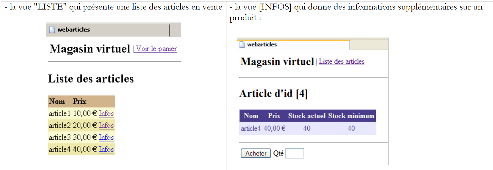 |
 |
 |
- la vista [ERREURS], que señala cualquier error de la aplicación

2.2.2. Arquitectura general de la aplicación
La aplicación creada en la parte 1 tiene una arquitectura de tres capas:
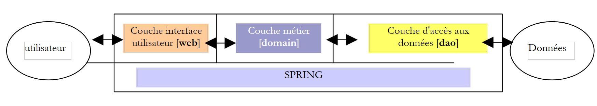 |
- Las tres capas se han hecho independientes mediante el uso de interfaces
- La integración de las diferentes capas se ha llevado a cabo con Spring
- cada capa tiene espacios de nombres separados: web (capa UI), domain (capa de negocio) y dao (capa de acceso a datos).
La aplicación sigue una arquitectura MVC (Modelo - Vista - Controlador). Si retomamos el esquema de capas anterior, la arquitectura MVC se integra en él de la siguiente manera:
 |
El procesamiento de una solicitud de un cliente se lleva a cabo siguiendo los siguientes pasos:
- el cliente realiza una solicitud al controlador. Este controlador es, en este caso, una página .aspx a la que se le asigna una función específica. Por ella pasan todas las solicitudes de los clientes. Es la puerta de entrada de la aplicación. Es la C de MVC.
- El controlador procesa esta solicitud. Para ello, puede necesitar la ayuda de la capa de negocio, lo que se denomina el modelo M en la estructura MVC.
- El controlador recibe una respuesta de la capa de negocio. La solicitud del cliente ha sido procesada. Esto puede dar lugar a varias respuestas posibles. Un ejemplo clásico es
- una página de errores si la solicitud no se ha podido procesar correctamente
- una página de confirmación en caso contrario
- el controlador elige la respuesta (= vista) que se enviará al cliente. Esta suele ser una página que contiene elementos dinámicos. El controlador proporciona estos elementos a la vista.
- La vista se envía al cliente. Es la V de MVC.
2.2.3. La plantilla
El modelo M de MVC se compone aquí de los siguientes elementos:
- las clases de negocio
- las clases de acceso a datos
- la base de datos
2.2.3.1. La base de datos
La base de datos solo contiene una tabla llamada ARTICLES generada con los siguientes comandos SQL:
CREATE TABLE ARTICLES (
ID INTEGER NOT NULL,
NOM VARCHAR(20) NOT NULL,
PRIX NUMERIC(15,2) NOT NULL,
STOCKACTUEL INTEGER NOT NULL,
STOCKMINIMUM INTEGER NOT NULL
);
/* restricciones */
ALTER TABLE ARTICLES ADD CONSTRAINT CHK_ID check (ID>0);
ALTER TABLE ARTICLES ADD CONSTRAINT CHK_PRIX check (PRIX>=0);
ALTER TABLE ARTICLES ADD CONSTRAINT CHK_STOCKACTUEL check (STOCKACTUEL>=0);
ALTER TABLE ARTICLES ADD CONSTRAINT CHK_STOCKMINIMUM check (STOCKMINIMUM>=0);
ALTER TABLE ARTICLES ADD CONSTRAINT CHK_NOM check (NOM<>'');
ALTER TABLE ARTICLES ADD CONSTRAINT UNQ_NOM UNIQUE (NOM);
/* clave primaria */
ALTER TABLE ARTICLES ADD CONSTRAINT PK_ARTICLES PRIMARY KEY (ID);
clave primaria que identifica un artículo de forma única | |
nombre del artículo | |
su precio | |
su stock actual | |
el stock por debajo del cual se debe realizar un pedido de reposición |
2.2.3.2. Los espacios de nombres del modelo
El modelo M se proporciona en forma de dos espacios de nombres:
- istia.st.articles.dao: contiene las clases de acceso a los datos de la capa [dao]
- istia.st.articles.domain: contiene las clases de negocio de la capa [domain]
Cada uno de estos espacios de nombres se encuentra en un archivo «assembly» propio:
assembly | contenu | rôle |
webarticles-dao | - [IArticlesDao]: la interfaz de acceso a la capa [dao]. Es la única interfaz que ve la capa [domain]. No ve ninguna otra. - [Article]: clase que define un artículo - [ArticlesDaoArrayList]: clase de implementación de la interfaz [IArticlesDao] con una clase [ArrayList] | capa de acceso a datos - se encuentra íntegramente en la capa [dao] de la arquitectura de tres capas de la aplicación web |
webarticles-domain | - [IArticlesDomain]: la interfaz de acceso a la capa [domain]. Es la única interfaz que ve la capa web. No ve ninguna otra. - [AchatsArticles]: una clase que implementa [IArticlesDomain] - [Achat]: clase que representa la compra de un cliente - [Panier]: clase que representa el conjunto de compras de un cliente | representa el modelo de compras en la web - se encuentra íntegramente en la capa [domain] de la arquitectura de tres capas de la aplicación web |
2.2.4. Implementación y pruebas de la aplicación [webarticles]
2.2.4.1. Implementación
Implementamos la aplicación desarrollada en la parte 1 del artículo en una carpeta llamada [runtime]:
 |  |
 |
Comentarios:
La carpeta [runtime] contiene tres archivos y dos subcarpetas:
- los controladores [global.asax] y [main.aspx]
- el archivo de configuración [web.config]
- la carpeta [bin], que contiene:
- los DLL de las tres capas [webarticles-dao.dll], [webarticles-domain.dll], [webarticles-web.dll]
- los archivos necesarios para Spring [Spring-Core.*], [log4net.dll]
- la carpeta [vues] que contiene el código de presentación de las diferentes vistas.
- No es necesario incluir los archivos de código .vb, ya que su versión compilada se encuentra en DLL.
2.2.4.2. Pruebas
Configuramos el servidor web [Cassini] de la siguiente manera:
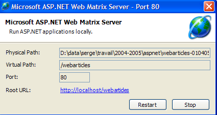
con:
Ruta física: D:\data\serge\travail\2004-2005\aspnet\webarticles-010405\runtime\
Ruta virtual: /webarticles
Con un navegador solicitamos el URL [http://localhost/webarticles/main.aspx]

Recordemos que la capa [dao] está implementada por una clase que almacena los artículos en un objeto [ArrayList]. Esta clase crea una lista inicial de cuatro artículos. A partir de la vista anterior, utilizamos los enlaces del menú para realizar operaciones. A continuación se muestran algunas de ellas. La columna de la izquierda representa la solicitud del cliente y la columna de la derecha, la respuesta que se le da.
 |  |
 |  |
 | 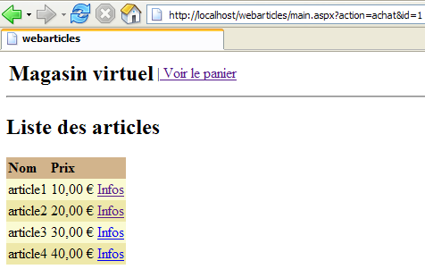 |
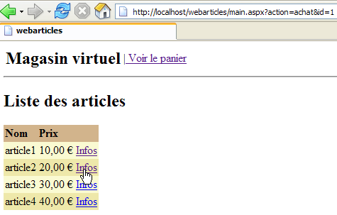 | 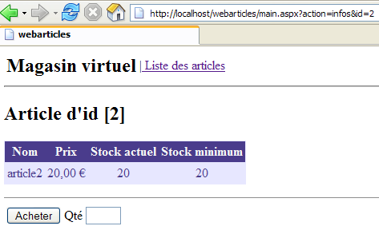 |
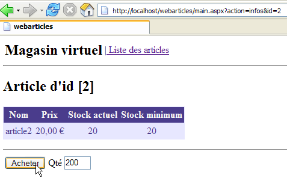 |  |
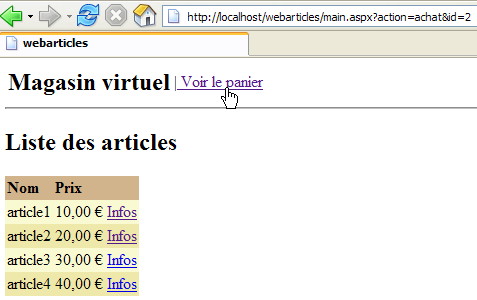 |  |
 |  |
 |  |
 |  |
 | 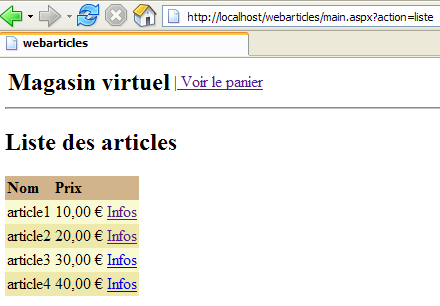 |
 |  |
 |  |
2.2.5. La capa [dao] revisada
En nuestra primera implementación de la capa [dao], la interfaz [IArticlesDao] de acceso a los datos se había implementado mediante una clase que almacenaba los artículos en un objeto [ArrayList]. Esto nos permitió no detenernos en esta capa y demostrar que lo único que importaba era su interfaz y no su implementación. Así pudimos construir una aplicación web operativa. Esta cuenta con tres capas: [web], [domain] y [dao]. A continuación, vamos a proponer diferentes implementaciones de la capa [dao]. Cada una de ellas podrá sustituir a la capa actual [dao] sin necesidad de modificar las capas [domain] y [web]. Esta flexibilidad se consigue porque:
- la capa [domain] no se dirige a una clase concreta, sino a una interfaz [IArticlesDao]
- gracias a Spring, hemos podido ocultar a la capa [domain] el nombre de la clase de implementación de la interfaz [IArticlesDao].
2.2.5.1. Elementos de la capa [dao]
Recordemos algunos de los elementos de la capa [dao] que se mantendrán en las nuevas implementaciones:
- - [IArticlesDao]: la interfaz de acceso a la capa [dao]
- - [Article]: clase que define un artículo
2.2.5.2. La clase [Article]
La clase que define un artículo es la siguiente:
Imports System
Namespace istia.st.articles.dao
Public Class Article
' campos privados
Private _id As Integer
Private _nom As String
Private _prix As Double
Private _stockactuel As Integer
Private _stockminimum As Integer
' ID de artículo
Public Property id() As Integer
Get
Return _id
End Get
Set(ByVal Value As Integer)
If Value <= 0 Then
Throw New Exception("Le champ id [" + Value.ToString + "] est invalide")
End If
Me._id = Value
End Set
End Property
' nombre del artículo
Public Property nom() As String
Get
Return _nom
End Get
Set(ByVal Value As String)
If Value Is Nothing OrElse Value.Trim.Equals("") Then
Throw New Exception("Le champ nom [" + Value + "] est invalide")
End If
Me._nom = Value
End Set
End Property
' precio del artículo
Public Property prix() As Double
Get
Return _prix
End Get
Set(ByVal Value As Double)
If Value < 0 Then
Throw New Exception("Le champ prix [" + Value.ToString + "] est invalide")
End If
Me._prix = Value
End Set
End Property
' stock actual del artículo
Public Property stockactuel() As Integer
Get
Return _stockactuel
End Get
Set(ByVal Value As Integer)
If Value < 0 Then
Throw New Exception("Le champ stockActuel [" + Value.ToString + "] est invalide")
End If
Me._stockactuel = Value
End Set
End Property
' stock mínimo del artículo
Public Property stockminimum() As Integer
Get
Return _stockminimum
End Get
Set(ByVal Value As Integer)
If Value < 0 Then
Throw New Exception("Le champ stockMinimum [" + Value.ToString + "] est invalide")
End If
Me._stockminimum = Value
End Set
End Property
' fabricante por defecto
Public Sub New()
End Sub
' fabricante con propiedades
Public Sub New(ByVal id As Integer, ByVal nom As String, ByVal prix As Double, ByVal stockactuel As Integer, ByVal stockminimum As Integer)
Me.id = id
Me.nom = nom
Me.prix = prix
Me.stockactuel = stockactuel
Me.stockminimum = stockminimum
End Sub
' método de identificación del artículo
Public Overrides Function ToString() As String
Return "[" + id.ToString + "," + nom + "," + prix.ToString + "," + stockactuel.ToString + "," + stockminimum.ToString + "]"
End Function
End Class
End Namespace
Esta clase ofrece:
- un constructor que permite establecer los 5 datos de un artículo: [id, nom, prix, stockactuel, stockminimum]
- propiedades públicas que permiten leer y escribir los 5 datos.
- una comprobación de los datos introducidos en el artículo. En caso de datos erróneos, se lanza una excepción.
- un método toString que permite obtener el valor de un artículo en forma de cadena de caracteres. Esto suele ser útil para la depuración de una aplicación.
2.2.5.3. La interfaz [IArticlesDao]
La interfaz [IArticlesDao] se define de la siguiente manera:
Imports System
Imports System.Collections
Namespace istia.st.articles.dao
Public Interface IArticlesDao
' lista de todos los artículos
Function getAllArticles() As IList
' añade un artículo
Function ajouteArticle(ByVal unArticle As Article) As Integer
' elimina un artículo
Function supprimeArticle(ByVal idArticle As Integer) As Integer
' modifica un artículo
Function modifieArticle(ByVal unArticle As Article) As Integer
' busca un artículo
Function getArticleById(ByVal idArticle As Integer) As Article
' elimina todos los artículos
Sub clearAllArticles()
' cambia el stock de un artículo
Function changerStockArticle(ByVal idArticle As Integer, ByVal mouvement As Integer) As Integer
End Interface
End Namespace
La función de los distintos métodos de la interfaz es la siguiente:
devuelve todos los artículos de la fuente de datos | |
vacía la fuente de datos | |
devuelve el objeto [Article] identificado por su número | |
permite añadir un artículo a la fuente de datos | |
permite modificar un artículo de la fuente de datos | |
permite eliminar un artículo de la fuente de datos | |
permite modificar el stock de un artículo de la fuente de datos |
La interfaz pone a disposición de los programas cliente una serie de métodos definidos únicamente por sus firmas. No se ocupa de la forma en que estos métodos se implementarán realmente. Esto aporta flexibilidad a una aplicación. El programa cliente realiza sus llamadas a una interfaz y no a una implementación concreta de la misma.
 |
La elección de una implementación concreta se realiza mediante un archivo de configuración de Spring.
2.3. La clase de implementación [ArticlesDaoPlainODBC]
Ofrecemos una nueva implementación de la capa [dao] que supone que los datos se encuentran en una fuente ODBC. Se sabe que, en Windows, prácticamente todos los SGBD del mercado cuentan con un controlador ODBC. La ventaja de esta solución es que se puede cambiar de SGBD de forma transparente para la aplicación. La desventaja es que un controlador ODBC que solo aprovecha las características comunes a todos los SGBD suele ser menos eficaz que un controlador escrito específicamente para aprovechar todo el potencial de un SGBD concreto. Se puede consultar el apartado 3.7 para ver un ejemplo de creación de código fuente ODBC.
2.3.1. El código
2.3.1.1. El esqueleto
La clase [ArticlesDaoPlainODBC] implementa la interfaz [IArticlesDao] de la siguiente manera:
Comentarios:
- línea 3: se importa el espacio de nombres que contiene las clases .NET de acceso a las fuentes ODBC
- línea 11: memorizará la conexión a la fuente ODBC
- línea 12: memorizará el nombre DSN de la fuente de datos
- líneas 13-19: variables privadas de tipo [OdbcCommand] que definen las consultas SQL utilizadas por los distintos métodos de la clase
- líneas 22-27: el constructor. Recibe los elementos que le permiten construir el objeto [OdbcConnection] que conectará el código con la fuente de datos ODBC
- líneas 29-31: el método para añadir un artículo
- líneas 33-35: el método para modificar el stock de un artículo
- líneas 37-39: el método que elimina todos los artículos de la fuente de datos ODBC
- líneas 41-43: método para obtener la lista de todos los artículos de la fuente ODBC
- líneas 45-47: el método que permite obtener un artículo concreto
- líneas 49-51: método que permite modificar determinados campos de un artículo cuyo número se conoce
- líneas 53-55: método que permite eliminar un artículo cuyo número se conoce
- líneas 57-60: método de utilidad que permite ejecutar un [SELECT] sobre la fuente de datos y mostrar el resultado
- líneas 62-64: método de utilidad que permite ejecutar un [INSERT, UPDATE, DELETE] sobre la fuente de datos y mostrar el resultado
2.3.1.2. El constructor
Comentarios:
- línea 2: el constructor recibe los tres datos que necesita para conectarse a una fuente ODBC: el nombre DSN de la fuente, la identidad con la que hay que conectarse y la contraseña asociada.
- línea 8: se almacena el nombre DSN de la fuente para poder volver a indicarlo en los mensajes de error.
- línea 9: se instancia el objeto [OdbcConnection]. Una conexión instanciada no es una conexión abierta. Es el método [open] el que realiza la apertura.
- líneas 12-19: preparamos las consultas SQL en los objetos [OdbcCommand]. Esto nos evitará tener que volver a crearlas cada vez que las necesitemos. Los parámetros formales ? de las consultas se sustituirán por valores reales en el momento de ejecutar la consulta.
2.3.1.3. El método executeQuery
Comentarios:
- el método [executeQuery] es un método de utilidad que:
- ejecuta una consulta [SELECT id, nom, prix, stockactuel, stockminimum from ARTICLES ...] sobre la fuente de datos
- devuelve el resultado en forma de una lista de objetos [Article]
- línea 1: el único parámetro del método es el objeto [OdbcCommand] que contiene la consulta [Select] que se va a ejecutar.
- línea 7: se abre la conexión. Se cerrará en la línea 29, independientemente de si se ha producido un error o no.
- línea 9: se instancia el objeto [OdbcDataReader] necesario para procesar el resultado de [Select]
- Líneas 13-23: cada línea resultante de [Select] se coloca en un objeto [Article] que se unirá a los demás artículos en un objeto [ArrayList]
- la lista de artículos se devuelve en la línea 25
- No se gestiona ninguna excepción. Deberá hacerlo el código que llama a este método.
2.3.1.4. El método executeUpdate
Comentarios:
- el método recibe un objeto [OdbcCommand] que contiene una consulta SQL de tipo [Insert, Update, Delete].
- La conexión se abre en la línea 5. Se cerrará en la línea 10, independientemente de si se ha producido una excepción o no.
- La consulta de actualización se ejecuta en la línea 7. Se devuelve inmediatamente el resultado, que es el número de filas de la tabla ARTICLES modificadas por la consulta.
2.3.1.5. El método ajouteArticle
Comentarios:
- línea 1: el método recibe el artículo que se va a añadir a la fuente de datos ODBC. Devuelve el número de líneas afectadas por esta operación, c.a.d. 1 o 0
- líneas 3 y 20: el método está sincronizado. Este será el caso de todos los métodos de acceso a datos. Esto implica que solo un hilo a la vez podrá trabajar en la fuente de datos. Probablemente sea demasiado conservador. Existen mejores alternativas, en particular la de incluir estas operaciones en transacciones. En este caso, es SGBD el que gestiona los accesos concurrentes. No hemos querido introducir el concepto de transacción por el momento. Spring nos ofrece la posibilidad de introducirlas en la capa [domain]. Quizás tengamos ocasión de volver sobre ello en otro artículo.
- En las líneas 5-12, se asignan valores a los parámetros formales de la consulta del objeto [insertCommand] inicializado por el constructor. Recordemos esta:
insertCommand = New OdbcCommand("insert into ARTICLES(id, nom, prix, stockactuel, stockminimum) values (?,?,?,?,?)", connexion)
Los 5 valores necesarios para la consulta se proporcionan en las líneas 7-11.
- Líneas 13-19: se ejecuta la consulta. Si se ejecuta correctamente, se devuelve el resultado. De lo contrario, se lanza una excepción genérica con un mensaje de error explícito
2.3.1.6. El método modifieArticle
Comentarios:
- línea 1: el método recibe el artículo que se va a modificar en la fuente de datos ODBC. Devuelve el número de líneas afectadas por esta operación, c.a.d. 1 o 0
- Los comentarios del método [ajouteArticle] pueden incluirse aquí
2.3.1.7. El método supprimeArticle
Comentarios:
- línea 1: el método recibe el número del artículo que se va a eliminar en la fuente de datos ODBC. Devuelve el número de líneas afectadas por esta operación, c.a.d. 1 o 0
- Los comentarios del método [ajouteArticle] pueden incluirse aquí
2.3.1.8. El método getAllArticles
Comentarios:
- línea 1: el método no recibe ningún parámetro. Devuelve la lista de todos los artículos de la fuente de datos ODBC
- se envía la consulta [Select], que solicita todos los artículos, al método [executeQuery] - línea 6
- La lista obtenida se devuelve en la línea 8
- En las líneas 9-12, se gestiona una posible excepción
2.3.1.9. El método getArticleById
Comentarios:
- línea 1: el método recibe como parámetro el número del artículo deseado. Devuelve dicho artículo si se encuentra en la fuente ODBC; de lo contrario, devuelve la referencia [nothing].
- La consulta [Select] que solicita el artículo se inicializa en las líneas 5-8
- se ejecuta en la línea 12: se obtiene una lista de artículos
- si esta lista está vacía, se devuelve la referencia [nothing] en la línea 14
- ; de lo contrario, se devuelve el único artículo de la lista en la línea 16
- En las líneas 17-20, se gestiona una posible excepción
2.3.1.10. El método clearAllArticles
Comentarios:
- línea 1: el método no recibe ningún parámetro y no devuelve nada
- línea 6: se ejecuta la solicitud de eliminación de todos los artículos
- líneas 7-10: se gestiona una posible excepción
2.3.1.11. El método changerStockArticle
Comentarios:
- línea 1: el método recibe como parámetros el número del artículo cuyo stock hay que modificar, así como el incremento del mismo (positivo o negativo). Devuelve el número de líneas modificadas por la operación c.a.d. 0 o 1.
- Líneas 5-10: se inicializa la consulta [updateStockCommand]. Recordemos el texto de la consulta SQL:
updateStockCommand = New OdbcCommand("update ARTICLES set stockactuel=stockactuel+? where id=? and (stockactuel+?)>=0", connexion)
Se observará que el stock solo se modifica si, una vez modificado, sigue siendo >=0.
- La consulta de actualización del stock del artículo se ejecuta en la línea 13 y se muestra el resultado.
- En las líneas 14-18, se gestiona una posible excepción
2.3.2. Generación del ensamblado de la capa [dao]
El proyecto de Visual Studio de esta nueva versión de la capa [dao] tiene la siguiente estructura:
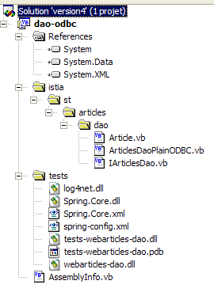
El proyecto está configurado para generar un DLL denominado [webarticles-dao.dll]:
 |  |
2.3.3. Pruebas Nunit de la capa [dao]
2.3.3.1. Creación de una fuente ODBC-Firebird
Para probar nuestra nueva capa [dao] necesitamos una fuente de datos ODBC y, por lo tanto, una base de datos. Utilizamos Firebird SGBD (apartado 3.5). Con IBExpert (apartado 3.6), creamos la siguiente base de artículos:
 |  |
El administrador de esta base de datos será el usuario [SYSDBA] con la contraseña [masterkey]. Creamos algunos artículos:

Ahora creamos la siguiente fuente ODBC Firebird (véase el apartado 3.7):
 |
La fuente ODBC creada tiene las siguientes características:
- nombre DSN: odbc-firebird-articles
- identidad de conexión: SYSDBA
- contraseña asociada: masterkey
2.3.3.2. La clase de prueba de NUnit
Ya hemos escrito una clase de prueba para la capa [dao] construida inicialmente. Si el lector lo recuerda, esta clase no probaba una clase concreta, sino la interfaz [IArticlesDao]:
Imports System
Imports System.Collections
Imports NUnit.Framework
Imports istia.st.articles.dao
Imports System.Threading
Imports Spring.Objects.Factory.Xml
Imports System.IO
Namespace istia.st.articles.tests
<TestFixture()> _
Public Class NunitTestArticlesArrayList
' el objeto a probar
Private articlesDao As IArticlesDao
<SetUp()> _
Public Sub init()
' se recupera una instancia del generador de objetos Spring
Dim factory As XmlObjectFactory = New XmlObjectFactory(New FileStream("spring-config.xml", FileMode.Open))
' se solicita la instanciación del objeto articlesdao
articlesDao = CType(factory.GetObject("articlesdao"), IArticlesDao)
End Sub
....
Se observa que en el método de atributo <Setup()>, se solicita a Spring una referencia al singleton denominado [articlesdao] de tipo [IArticlesDao], es decir, del tipo de la interfaz. El singleton [articlesdao] se definió mediante el siguiente archivo de configuración [spring-config.xml]:
<?xml version="1.0" encoding="iso-8859-1" ?>
<!DOCTYPE objects PUBLIC "-//SPRING//DTD OBJECT//EN"
"http://www.springframework.net/dtd/spring-objects.dtd">
<objects>
<object id="articlesdao" type="istia.st.articles.dao.ArticlesDaoArrayList, webarticles-dao"/>
</objects>
Veamos que la clase de prueba inicial nos permite probar nuestra nueva capa [dao] sin modificaciones ni recompilación.
- Creemos en la carpeta de Visual Studio de nuestra nueva capa [dao] la carpeta [tests] (a la derecha, abajo) copiando la carpeta [bin] del proyecto de pruebas de la capa inicial [dao] (a la izquierda, abajo). Si es necesario, se invita al lector a revisar el proyecto de pruebas de la primera versión de la capa [dao] en la primera parte del artículo.
 |  |
- en la carpeta [tests] sustituimos la DLL [webarticles-dao.dll] procedente de laantigua capa [dao] por DLL [webarticles-dao.dll], procedentes de la nueva capa [dao]
- modificamos el archivo de configuración [spring-config.xml] para instanciar la nueva clase [ArticlesDaoPlainODBC]:
Comentarios:
- línea 6, el objeto [articlesdao] ahora está asociado a una instancia de la clase [ ArticlesDaoPlainODBC]
- esta clase tiene un constructor con tres argumentos:
- el nombre de la fuente DSN - línea 8
- la identidad con la que se accederá a la base de datos - línea 11
- la contraseña asociada a esta identidad - línea 14
Aquí retomamos la información de la fuente ODBC-Firebird que hemos creado anteriormente.
2.3.3.3. Pruebas
Ahora estamos listos para las pruebas. Con la ayuda de la aplicación [Nunit-Gui], cargamos el archivo DLL [test-webarticles-dao.dll] de la carpeta [tests] anterior y ejecutamos la prueba [testGetAllArticles]:

Al observar la captura de pantalla anterior, cabe lamentar el nombre [NUnitTestArticlesDaoArrayList] que se le dio inicialmente a la clase de prueba. Esto puede llevar a confusión. En realidad, lo que se está probando aquí es la clase [ArticlesDaoPlainODBC]. La captura de pantalla muestra que hemos recuperado correctamente los artículos que habíamos colocado en la tabla [ARTICLES]. Ahora, realicemos todas las pruebas:

En la ventana de la izquierda se muestra la lista de métodos probados. El color del punto que precede al nombre de cada método indica si este ha superado la prueba (verde) o no (rojo). El lector que consulte este documento en pantalla podrá ver que todas las pruebas se han superado.
2.3.3.4. Conclusión
Acabamos de demostrar que:
- porque la clase de prueba NUnit no hacía referencia a una clase, sino a una interfaz;
- porque el nombre exacto de la clase de instanciación de la interfaz se proporcionaba en un archivo de configuración y no en el código;
- porque Spring se encargaba de instanciar la clase y de proporcionar una referencia a la misma al código de prueba;
por lo tanto, el código de prueba escrito para la capa inicial [dao] seguía siendo válido para una nueva implementación de esa misma capa. No necesitamos tener acceso al código de la clase de prueba. Solo utilizamos su versión compilada, la generada durante la prueba de la capa [dao] inicial. Llegaremos a conclusiones similares cuando sea necesario integrar la nueva capa [dao] en la aplicación [webarticles].
2.3.4. Integración de la nueva capa [dao] en la aplicación [webarticles]
2.3.4.1. Las pruebas de integración
Recordemos que la versión inicial de la aplicación [webarticles] se había implementado en la carpeta [runtime] siguiente:
| |
|
Se invita al lector a revisar, si procede, el apartado 2.2.4, que detalla las modalidades de implementación de la aplicación [webarticles]. Realizamos las siguientes modificaciones en el contenido de la carpeta [runtime]:
- en la carpeta [bin], el archivo DLL de la antigua capa [dao] se sustituye por el archivo DLL de la nueva capa [dao]
- en [runtime], el archivo de configuración [web.config] se sustituye por un archivo que tiene en cuenta la nueva clase de implementación de la capa [dao]:
 |
 |
El nuevo archivo de configuración [web.config] es el siguiente:
Comentarios:
- las líneas 14-24 asocian al singleton [articlesDao] una instancia de la nueva clase [ArticlesDaoPlainODBC]. Es la única modificación. Ya la hemos visto durante las pruebas de la nueva capa [dao].
Estamos listos para las pruebas. Configuramos el servidor web [Cassini] de la misma manera que en el apartado 2.2.4. Inicializamos la tabla de artículos [Firebird] con los siguientes valores:

Asegúrese de que el servidor web Cassini, así como SGBD y [Firebird], estén en ejecución. Con un navegador, solicitamos la URL [http://localhost/webarticles/main.aspx]:

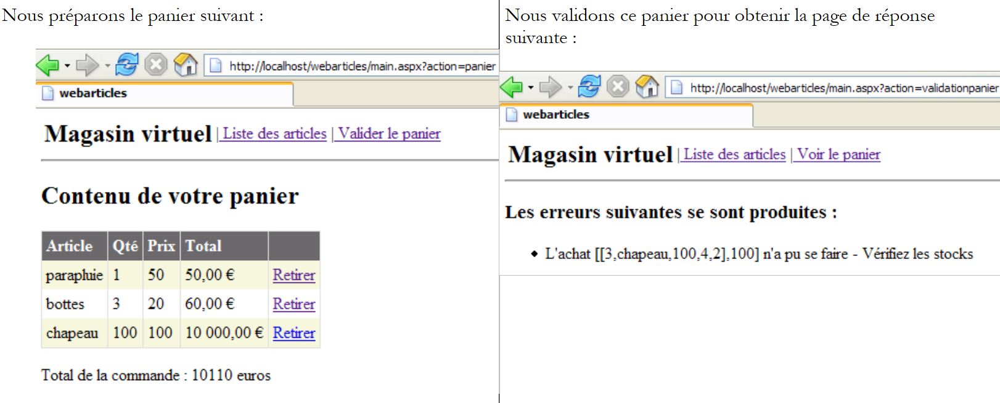 |
Ahora comprobemos el contenido de la tabla [ARTICLES] en la base de datos [Firebird]:

Los artículos [parapluie] y [bottes] se han comprado y sus existencias se han reducido en la cantidad comprada. El artículo [chapeau] no se ha podido comprar porque la cantidad solicitada superaba la cantidad en stock. Invitamos al lector a realizar pruebas adicionales.
2.3.4.2. Conclusión
¿Qué hemos hecho?
- Hemos recuperado la versión de implementación de la versión anterior;
- hemos sustituido el DLL de la capa [dao] por una nueva versión. Los DLL de las capas [web] y [domain] se han mantenido sin cambios;
- hemos modificado el archivo de configuración [web.config] para que tenga en cuenta la nueva clase de implementación de la capa [dao]
Todo esto es limpio y ofrece una gran facilidad de evolución a la aplicación web. Estas importantes características nos las aportan dos opciones de arquitectura:
- el acceso a las capas a través de interfaces
- la integración y configuración de las capas mediante Spring.
Ahora proponemos una nueva implementación de la capa [dao].
2.4. La clase de implementación [ArticlesDaoSqlServer]
La segunda implementación de la capa [dao] supone que los datos se encuentran en una base de datos SQL Server. Microsoft pone a disposición un SGBD denominado MSDE, que es una versión limitada de SQL Server. En el anexo se indica cómo obtenerlo e instalarlo, en el apartado 3.12.
2.4.1. El código
La clase [ArticlesDaoSqlServer] es muy similar a la clase [ArticlesDaoPlainODBC] estudiada anteriormente. Por lo tanto, solo indicaremos los cambios introducidos con respecto a la versión anterior:
- las clases necesarias se encuentran en el espacio de nombres [System.Data.SqlClient] en lugar del espacio de nombres [System.Data.Odbc]
- la conexión de tipo [OdbcConnection] tiene ahora el tipo [SqlConnection]
- los objetos [OdbcCommand] tienen ahora el tipo [SqlCommand]
- La sintaxis de las consultas SQL configuradas cambia. La consulta de inserción queda así:
insertCommand = New SqlCommand("insert into ARTICLES(id, nom, prix, stockactuel, stockminimum) values (@id,@nom,@prix,@sa,@sm)", connexion)
mientras que antes era:
insertCommand = New OdbcCommand("insert into ARTICLES(id, nom, prix, stockactuel, stockminimum) values (?,?,?,?,?)", connexion)
- El método [ajouteArticle] pasa a ser el siguiente:
Public Function ajouteArticle(ByVal unArticle As Article) As Integer Implements IArticlesDao.ajouteArticle
' sección exclusiva
SyncLock Me
' se prepara la consulta de inserción
With insertCommand.Parameters
.Clear()
.Add(New SqlParameter("@id", unArticle.id))
.Add(New SqlParameter("@nom", unArticle.nom))
.Add(New SqlParameter("@prix", unArticle.prix))
.Add(New SqlParameter("@sa", unArticle.stockactuel))
.Add(New SqlParameter("@sm", unArticle.stockminimum))
End With
Try
'se ejecuta
Return executeUpdate(insertCommand)
Catch ex As Exception
'error de consulta
Throw New Exception(String.Format("Erreur à l'ajout de l'article [{0}] : {1}", unArticle.ToString, ex.Message))
End Try
End SyncLock
End Function
- el fabricante también se modifica:
Public Sub New(ByVal serveur As String, ByVal databaseName As String, ByVal uid As String, ByVal password As String)
' servidor: nombre de la instancia SQL servidor al que se debe acceder
' databaseName: nombre de la base de datos a la que se debe acceder
' uid: identidad del usuario
' contraseña: su contraseña
': se recupera el nombre de la base de datos pasado como argumento
Me.databaseName = databaseName
'se instanciar la conexión
Dim connectString As String = String.Format("Data Source={0};Initial Catalog={1};UID={2};PASSWORD={3}", serveur, databaseName, uid, password)
connexion = New SqlConnection(connectString)
' se preparan las consultas SQL
insertCommand = New SqlCommand("insert into ARTICLES(id, nom, prix, stockactuel, stockminimum) values (@id,@nom,@prix,@sa,@sm)", connexion)
...
End Sub
El constructor admite ahora cuatro parámetros:
' servidor: nombre de la instancia SQL a la que se va a conectar
' databaseName: nombre de la base de datos a la que se debe acceder
' uid: identidad del usuario
' contraseña: su contraseña
El código completo de la clase [ArticlesDaoSqlServer] es el siguiente:
Imports System
Imports System.Collections
Imports System.Data.SqlClient
Namespace istia.st.articles.dao
Public Class ArticlesDaoSqlServer
Implements istia.st.articles.dao.IArticlesDao
' campos privados
Private connexion As SqlConnection = Nothing
Private databaseName As String
Private insertCommand As SqlCommand
Private updatecommand As SqlCommand
Private deleteSomeCommand As SqlCommand
Private selectSomeCommand As SqlCommand
Private updateStockCommand As SqlCommand
Private deleteAllCommand As SqlCommand
Private selectAllCommand As SqlCommand
' constructor
Public Sub New(ByVal serveur As String, ByVal databaseName As String, ByVal uid As String, ByVal password As String)
' servidor: nombre de la instancia SQL a la que se va a conectar
' databaseName: nombre de la base de datos a la que conectarse
' uid: identidad del usuario
' contraseña: su contraseña
'se recupera el nombre de la base de datos pasado como argumento
Me.databaseName = databaseName
': se instanciar la conexión
Dim connectString As String = String.Format("Data Source={0};Initial Catalog={1};UID={2};PASSWORD={3}", serveur, databaseName, uid, password)
connexion = New SqlConnection(connectString)
' se preparan las consultas SQL
insertCommand = New SqlCommand("insert into ARTICLES(id, nom, prix, stockactuel, stockminimum) values (@id,@nom,@prix,@sa,@sm)", connexion)
updatecommand = New SqlCommand("update ARTICLES set nom=@nom, prix=@prix, stockactuel=@sa, stockminimum=@sm where id=@id", connexion)
deleteSomeCommand = New SqlCommand("delete from ARTICLES where id=@id", connexion)
selectSomeCommand = New SqlCommand("select id, nom, prix, stockactuel, stockminimum from ARTICLES where id=@id", connexion)
updateStockCommand = New SqlCommand("update ARTICLES set stockactuel=stockactuel+@mvt where id=@id and (stockactuel+@mvt)>=0", connexion)
selectAllCommand = New SqlCommand("select id, nom, prix, stockactuel, stockminimum from ARTICLES", connexion)
deleteAllCommand = New SqlCommand("delete from ARTICLES", connexion)
End Sub
Public Function ajouteArticle(ByVal unArticle As Article) As Integer Implements IArticlesDao.ajouteArticle
' sección exclusiva
SyncLock Me
' se prepara la consulta de inserción
With insertCommand.Parameters
.Clear()
.Add(New SqlParameter("@id", unArticle.id))
.Add(New SqlParameter("@nom", unArticle.nom))
.Add(New SqlParameter("@prix", unArticle.prix))
.Add(New SqlParameter("@sa", unArticle.stockactuel))
.Add(New SqlParameter("@sm", unArticle.stockminimum))
End With
Try
'se ejecuta
Return executeUpdate(insertCommand)
Catch ex As Exception
'error de consulta
Throw New Exception(String.Format("Erreur à l'ajout de l'article [{0}] : {1}", unArticle.ToString, ex.Message))
End Try
End SyncLock
End Function
Public Function changerStockArticle(ByVal idArticle As Integer, ByVal mouvement As Integer) As Integer Implements IArticlesDao.changerStockArticle
' sección exclusiva
SyncLock Me
' se prepara la consulta de actualización de stock
With updateStockCommand.Parameters
.Clear()
.Add(New SqlParameter("@mvt", mouvement))
.Add(New SqlParameter("@id", idArticle))
End With
'se ejecuta
Try
Return executeUpdate(updateStockCommand)
Catch ex As Exception
'error de consulta
Throw New Exception(String.Format("Erreur lors du changement de stock [idArticle={0}, mouvement={1}] : [{2}]", idArticle, mouvement, ex.Message))
End Try
End SyncLock
End Function
Public Sub clearAllArticles() Implements IArticlesDao.clearAllArticles
' sección exclusiva
SyncLock Me
Try
'se ejecuta la consulta de inserción
executeUpdate(deleteAllCommand)
Catch ex As Exception
'error de consulta
Throw New Exception(String.Format("Erreur lors de la suppression des articles : {0}", ex.Message))
End Try
End SyncLock
End Sub
Public Function getAllArticles() As System.Collections.IList Implements IArticlesDao.getAllArticles
' sección exclusiva
SyncLock Me
Try
'se ejecuta la consulta SELECT
Dim articles As IList = executeQuery(selectAllCommand)
'se devuelve la lista
Return articles
Catch ex As Exception
'error de consulta
Throw New Exception(String.Format("Erreur lors de l'obtention des articles [select id,nom,prix,stockactuel,stockminimum from articles]: {0}", ex.Message))
End Try
End SyncLock
End Function
Public Function getArticleById(ByVal idArticle As Integer) As Article Implements IArticlesDao.getArticleById
' sección exclusiva
SyncLock Me
' se prepara la consulta select
With selectSomeCommand.Parameters
.Clear()
.Add(New SqlParameter("@id", idArticle))
End With
'se ejecuta
Try
'se ejecuta la consulta
Dim articles As IList = executeQuery(selectSomeCommand)
'se comprueba si se ha encontrado el artículo
If articles.Count = 0 Then Return Nothing
'se devuelve el artículo
Return CType(articles.Item(0), Article)
Catch ex As Exception
'error de consulta
Throw New Exception(String.Format("Erreur lors de la recherche de l'article [{0} : {1}", idArticle, ex.Message))
End Try
End SyncLock
End Function
Public Function modifieArticle(ByVal unArticle As Article) As Integer Implements IArticlesDao.modifieArticle
' sección exclusiva
SyncLock Me
' se prepara la consulta de actualización
With updatecommand.Parameters
.Clear()
.Add(New SqlParameter("@nom", unArticle.nom))
.Add(New SqlParameter("@prix", unArticle.prix))
.Add(New SqlParameter("@sa", unArticle.stockactuel))
.Add(New SqlParameter("@sm", unArticle.stockminimum))
.Add(New SqlParameter("@id", unArticle.id))
End With
' se ejecuta
Try
'se ejecuta la consulta de inserción
Return executeUpdate(updatecommand)
Catch ex As Exception
'error de consulta
Throw New Exception("Erreur lors de la modification de l'article [" + unArticle.ToString + "]", ex)
End Try
End SyncLock
End Function
Public Function supprimeArticle(ByVal idArticle As Integer) As Integer Implements IArticlesDao.supprimeArticle
' sección exclusiva
SyncLock Me
' Se prepara la consulta de eliminación
With deleteSomeCommand.Parameters
.Clear()
.Add(New SqlParameter("@id", idArticle))
End With
'se ejecuta
Try
'se ejecuta la consulta de eliminación
Return executeUpdate(deleteSomeCommand)
Catch ex As Exception
'error de consulta
Throw New Exception(String.Format("Erreur lors de la suppression de l'article [id={0}] : {1}", idArticle, ex.Message))
End Try
End SyncLock
End Function
Private Function executeQuery(ByVal query As SqlCommand) As IList
' ejecución de una consulta SELECT
' declaración del objeto que permite el acceso a todas las líneas de la tabla de resultados
Dim myReader As SqlDataReader = Nothing
Try
'se crea una conexión a la BDD
connexion.Open()
'se ejecuta la consulta
myReader = query.ExecuteReader()
'se declara una lista de artículos para devolverla posteriormente
Dim articles As IList = New ArrayList
Dim unArticle As Article
While myReader.Read()
'se prepara un artículo con los valores del lector
unArticle = New Article
unArticle.id = myReader.GetInt32(0)
unArticle.nom = myReader.GetString(1)
unArticle.prix = myReader.GetDouble(2)
unArticle.stockactuel = myReader.GetInt32(3)
unArticle.stockminimum = myReader.GetInt32(4)
'se añade el artículo a la lista
articles.Add(unArticle)
End While
'se devuelve el resultado
Return articles
Finally
' liberación de recursos
If Not myReader Is Nothing And Not myReader.IsClosed Then myReader.Close()
If Not connexion Is Nothing Then connexion.Close()
End Try
End Function
Private Function executeUpdate(ByVal updateCommand As SqlCommand) As Integer
' ejecución de una solicitud de actualización
Try
'se crea una conexión con BDD
connexion.Open()
'se ejecuta la consulta
Return updateCommand.ExecuteNonQuery()
Finally
' liberación de recursos
If Not connexion Is Nothing Then connexion.Close()
End Try
End Function
End Class
End Namespace
Se invita al lector a leer este código a la luz de los comentarios sobre la clase [ArticlesDaoPlainODBC] realizados anteriormente.
2.4.2. Generación del ensamblado de la capa [dao]
El nuevo proyecto de Visual Studio tiene la siguiente estructura:

El proyecto está configurado para generar un DLL denominado [webarticles-dao.dll]:
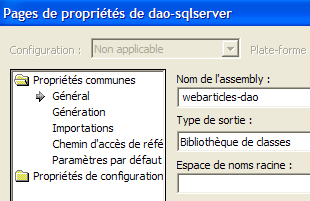 |  |
2.4.3. Pruebas Nunit de la capa [dao]
2.4.3.1. Creación de un servidor de origen de datos SQL
Para probar nuestra nueva capa [dao] necesitamos una fuente de datos SQL Server y, por lo tanto, el SGBD SQL Server. De hecho, utilizaremos el SGBD MSDE (MicroSoft Data Engine) (apartado 3.12), que es una versión del servidor SQL limitada únicamente por el número de usuarios simultáneos admitidos. Con [EMS MS SQL Manager] (apartado 3.14) creamos la siguiente base de artículos en una instancia MSDE denominada [portable1_tahe\msde140405]:
 |  |

La base de datos es propiedad del usuario [mdparticles], con contraseña [admarticles]. El comando Transact-SQL para crear la tabla [ARTICLES] es el siguiente:
CREATE TABLE [ARTICLES] (
[id] int NOT NULL,
[nom] varchar(20) COLLATE French_CI_AS NOT NULL,
[prix] float(53) NOT NULL,
[stockactuel] int NOT NULL,
[stockminimum] int NOT NULL,
CONSTRAINT [ARTICLES_uq] UNIQUE ([nom]),
PRIMARY KEY ([id]),
CONSTRAINT [ARTICLES_ck_id] CHECK ([id] > 0),
CONSTRAINT [ARTICLES_ck_nom] CHECK ([nom] <> ''),
CONSTRAINT [ARTICLES_ck_prix] CHECK ([prix] >= 0),
CONSTRAINT [ARTICLES_ck_stockactuel] CHECK ([stockactuel] >= 0),
CONSTRAINT [ARTICLES_ck_stockminimum] CHECK ([stockminimum] >= 0)
)
ON [PRIMARY]
GO
Creamos algunos artículos:
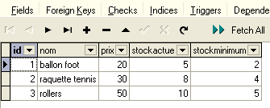
2.4.3.2. La clase de prueba NUnit
La clase de prueba Nunit de la clase de implementación [ArticlesDaoSqlServer] es la misma que la de la clase [ArticlesDaoPlainODBC] (véase el apartado 2.3.3.2). Seguimos un procedimiento similar para preparar la prueba Nunit de la clase:
- creamos en la carpeta de Visual Studio del proyecto [dao-sqlserver] la carpeta [tests] (a la derecha) copiando la carpeta [tests] del proyecto [dao-odbc] (a la izquierda):
 |  |
- en la carpeta [tests] del proyecto [dao-sqlserver], sustituimos DLL [webarticles-dao.dll] por DLL [webarticles-dao.dll], generados a partir del proyecto [dao-sqlserver]
- modificamos el archivo de configuración [spring-config.xml] para instanciar la nueva clase [ArticlesDaoSqlServer]:
Comentarios:
- línea 7, el objeto [articlesdao] está ahora asociado a una instancia de la clase [ ArticlesDaoSqlServeur]
- esta clase tiene un constructor con cuatro argumentos:
- el nombre de la instancia MSDE utilizada - línea 9
- el nombre de la base de datos - línea 12
- la identidad con la que se accederá a la base de datos - línea 15
- la contraseña asociada a esta identidad - línea 18
Aquí retomamos la información de la fuente MSDE que hemos creado anteriormente.
2.4.3.3. Pruebas
Ya estamos listos para las pruebas. Con la ayuda de la aplicación [Nunit-Gui], cargamos el archivo DLL [test-webarticles-dao.dll] de la carpeta [tests] anterior y ejecutamos la prueba [testGetAllArticles]:

A pesar del nombre [NUnitTestArticlesDaoArrayList] que se le dio inicialmente a la clase de prueba y que se ha conservado, ya que utilizamos DLL y [tests-webarticles-dao.dll], que proceden de esta clase, es precisamente la clase [ArticlesDaoSqlserver] la que se prueba aquí. La captura de pantalla muestra que hemos recuperado correctamente los artículos que habíamos colocado en la tabla [ARTICLES]. Ahora, realicemos todas las pruebas:
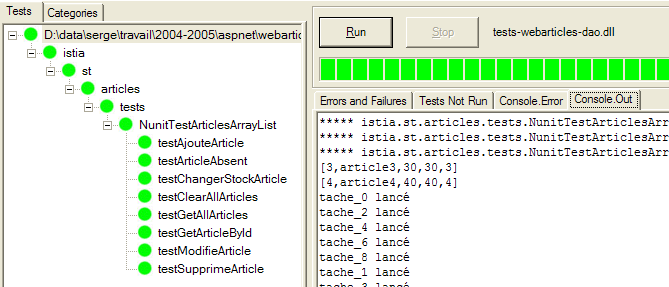
En la ventana de la izquierda se ve la lista de métodos probados. El color del punto que precede al nombre de cada método indica si el método ha tenido éxito (verde) o ha fallado (rojo). El lector que visualice este documento en pantalla podrá ver que todas las pruebas han tenido éxito.
2.4.4. Integración de la nueva capa [dao] en la aplicación [webarticles]
Seguimos el procedimiento explicado en el apartado 2.3.4. Realizamos las siguientes modificaciones en el contenido de la carpeta [runtime]:
- en la carpeta [bin], la DLL de laantigua capa [dao] se sustituye por el DLL de la nueva capa [dao] implementada por la clase [ArticlesDaoSqlServer]
- en [runtime], el archivo de configuración [web.config] se sustituye por un archivo que tiene en cuenta la nueva clase de implementación:
Comentarios:
- las líneas 15-33 asocian al singleton [articlesDao] una instancia de la nueva clase [ArticlesDaoSqlServer]. Es la única modificación. Ya nos encontramos con ella durante las pruebas de la nueva capa [dao]
Estamos listos para las pruebas. Mantenemos la misma configuración del servidor web [Cassini] que antes. Inicializamos la tabla de artículos [MSDE] con los siguientes valores:

Asegúrese de que el servidor web Cassini, así como SGBD y MSDE (en este caso, la instancia portable1_tahe\msde140405) estén en ejecución. Con un navegador, solicitamos el URL [http://localhost/webarticles/main.aspx]:

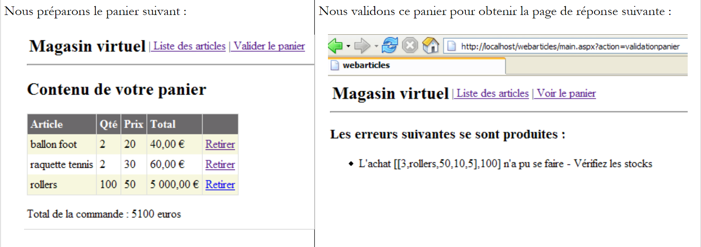 |
Ahora comprobemos el contenido de la tabla [ARTICLES] en la base de datos [MSDE]:
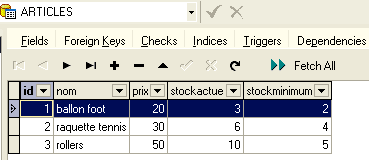
Los artículos [ballon foot] y [raquette tennis] se han comprado y sus existencias se han reducido en la cantidad comprada. El artículo [rollers] no se ha podido comprar porque la cantidad solicitada superaba la cantidad en stock. Invitamos al lector a realizar pruebas adicionales.
2.4.5. La clase de implementación [ArticlesDaoOleDb]
2.4.5.1. Las e es de las fuentes de datos OleDb
La tercera implementación de la capa [dao] supone que los datos se encuentran en una base de datos accesible a través de un controlador OleDb. El principio de las fuentes OleDb es análogo al de las fuentes ODBC. Un programa que utiliza una fuente OleDb lo hace a través de una interfaz estándar común a todas las fuentes OleDb. Cambiar de fuente OleDb equivale a cambiar de controlador OleDb. El código no se modifica.
Es posible conocer los controladores OleDb disponibles en su equipo gracias a Visual Studio:
- muestre el explorador de servidores mediante [Affichage/Explorateur de serveurs]:

- para añadir una nueva conexión, haga clic con el botón derecho en [Connexion de données] y seleccione la opción [Ajouter une connexion]. A continuación, aparecerá un asistente con el que podrá definir las características de la conexión:

- El panel [Fournisseur] muestra la lista de controladores OLEDB disponibles. Para la nueva capa [dao], vamos a utilizar un controlador [Microsoft Jet 4.0 OLE DB Provider] que da acceso a las bases ACCESS.
- Salgamos momentáneamente de Visual Studio para crear la base de datos ACCESS [articles.mdb] con la siguiente tabla única:

- La estructura de la tabla es la siguiente:
numérico - entero - clave primaria | |
texto - 20 caracteres - | |
numérico - real doble | |
numérico - entero | |
numérico - entero |
- Volvamos a Visual Studio y creemos una nueva conexión tal y como se ha explicado anteriormente:

- Elegimos el controlador [Microsoft Jet 4.0] y pasamos al panel [Connexion]:

- Con el botón [1], seleccionamos la base de datos ACCESS que acabamos de crear y, a continuación, completamos la definición de la conexión con el botón [Terminer]. La conexión creada aparece ahora en la lista de conexiones disponibles:

- Al hacer doble clic en la tabla [ARTICLES], se accede a su contenido:

- A continuación, podemos añadir, modificar o eliminar filas de la tabla.
- Seleccione en el explorador de servidores la nueva conexión para acceder a su hoja de propiedades:

- Es útil conocer la cadena de conexión. Nos servirá para conectarnos a la base de datos:
Provider=Microsoft.Jet.OLEDB.4.0;User ID=Admin;Data Source=D:\data\serge\databases\access\articles\articles.mdb;Mode=Share Deny None;Extended Properties="";Jet OLEDB:System database="";Jet OLEDB:Registry Path="";Jet OLEDB:Engine Type=5;Jet OLEDB:Database Locking Mode=1;Jet OLEDB:Global Partial Bulk Ops=2;Jet OLEDB:Global Bulk Transactions=1;Jet OLEDB:Create System Database=False;Jet OLEDB:Encrypt Database=False;Jet OLEDB:Don't Copy Locale on Compact=False;Jet OLEDB:Compact Without Replica Repair=False;Jet OLEDB:SFP=False
- De esta cadena, solo retendremos los siguientes elementos:
2.4.5.2. El código de la clase [ArticlesDaoOleDb]
La clase [ArticlesDaoOleDb]] es muy similar a la clase [ArticlesDaoPlainODBC] estudiada anteriormente. Por lo tanto, solo indicaremos los cambios introducidos con respecto a la versión anterior:
- las clases necesarias se encuentran en el espacio de nombres [System.Data.OleDb] en lugar del espacio de nombres [System.Data.Odbc]
- la conexión de tipo [OdbcConnection] tiene ahora el tipo [OleDbConnection]
- los objetos [OdbcCommand] tienen ahora el tipo [OleDbCommand]
El constructor de la clase admite como único parámetro la cadena de conexión a la base:
' constructor
Public Sub New(ByVal connectString As String)
' connectString: cadena de conexión a la fuente OleDb
'se instancia la conexión
connexion = New OleDbConnection(connectString)
' se preparan las consultas SQL
...
End Sub
El código completo de la clase [ArticlesDaoOleDb] es el siguiente:
Imports System
Imports System.Collections
Imports System.Data.OleDb
Namespace istia.st.articles.dao
Public Class ArticlesDaoOleDb
Implements istia.st.articles.dao.IArticlesDao
' campos privados
Private connexion As OleDbConnection = Nothing
Private insertCommand As OleDbCommand
Private updatecommand As OleDbCommand
Private deleteSomeCommand As OleDbCommand
Private selectSomeCommand As OleDbCommand
Private updateStockCommand As OleDbCommand
Private deleteAllCommand As OleDbCommand
Private selectAllCommand As OleDbCommand
' constructor
Public Sub New(ByVal connectString As String)
' connectString: cadena de conexión a la fuente OleDb
'se instancia la conexión
connexion = New OleDbConnection(connectString)
' se preparan las consultas SQL
insertCommand = New OleDbCommand("insert into ARTICLES(id, nom, prix, stockactuel, stockminimum) values (?,?,?,?,?)", connexion)
updatecommand = New OleDbCommand("update ARTICLES set nom=?, prix=?, stockactuel=?, stockminimum=? where id=?", connexion)
deleteSomeCommand = New OleDbCommand("delete from ARTICLES where id=?", connexion)
selectSomeCommand = New OleDbCommand("select id, nom, prix, stockactuel, stockminimum from ARTICLES where id=?", connexion)
updateStockCommand = New OleDbCommand("update ARTICLES set stockactuel=stockactuel+? where id=? and (stockactuel+?)>=0", connexion)
selectAllCommand = New OleDbCommand("select id, nom, prix, stockactuel, stockminimum from ARTICLES", connexion)
deleteAllCommand = New OleDbCommand("delete from ARTICLES", connexion)
End Sub
Public Function ajouteArticle(ByVal unArticle As Article) As Integer Implements IArticlesDao.ajouteArticle
' sección exclusiva
SyncLock Me
' se prepara la consulta de inserción
With insertCommand.Parameters
.Clear()
.Add(New OleDbParameter("id", unArticle.id))
.Add(New OleDbParameter("nom", unArticle.nom))
.Add(New OleDbParameter("prix", unArticle.prix))
.Add(New OleDbParameter("stockactuel", unArticle.stockactuel))
.Add(New OleDbParameter("stockminimum", unArticle.stockminimum))
End With
Try
'se ejecuta
Return executeUpdate(insertCommand)
Catch ex As Exception
'error de consulta
Throw New Exception(String.Format("Erreur à l'ajout de l'article [{0}] : {1}", unArticle.ToString, ex.Message))
End Try
End SyncLock
End Function
Public Function changerStockArticle(ByVal idArticle As Integer, ByVal mouvement As Integer) As Integer Implements IArticlesDao.changerStockArticle
' sección exclusiva
SyncLock Me
' se prepara la consulta de actualización de stock
With updateStockCommand.Parameters
.Clear()
.Add(New OleDbParameter("mvt1", mouvement))
.Add(New OleDbParameter("id", idArticle))
.Add(New OleDbParameter("mvt2", mouvement))
End With
'se ejecuta
Try
Return executeUpdate(updateStockCommand)
Catch ex As Exception
'error de consulta
Throw New Exception(String.Format("Erreur lors du changement de stock [idArticle={0}, mouvement={1}] : [{2}]", idArticle, mouvement, ex.Message))
End Try
End SyncLock
End Function
Public Sub clearAllArticles() Implements IArticlesDao.clearAllArticles
' sección exclusiva
SyncLock Me
Try
'se ejecuta la consulta de inserción
executeUpdate(deleteAllCommand)
Catch ex As Exception
'error de consulta
Throw New Exception(String.Format("Erreur lors de la suppression des articles : {0}", ex.Message))
End Try
End SyncLock
End Sub
Public Function getAllArticles() As System.Collections.IList Implements IArticlesDao.getAllArticles
' sección exclusiva
SyncLock Me
Try
'se está ejecutando la consulta SELECT
Dim articles As IList = executeQuery(selectAllCommand)
'se devuelve la lista
Return articles
Catch ex As Exception
'error de consulta
Throw New Exception(String.Format("Erreur lors de l'obtention des articles [select id,nom,prix,stockactuel,stockminimum from articles]: {0}", ex.Message))
End Try
End SyncLock
End Function
Public Function getArticleById(ByVal idArticle As Integer) As Article Implements IArticlesDao.getArticleById
' sección exclusiva
SyncLock Me
' se prepara la consulta SELECT
With selectSomeCommand.Parameters
.Clear()
.Add(New OleDbParameter("id", idArticle))
End With
'se ejecuta
Try
'se ejecuta la consulta
Dim articles As IList = executeQuery(selectSomeCommand)
'se comprueba si se ha encontrado el artículo
If articles.Count = 0 Then Return Nothing
'se devuelve el artículo
Return CType(articles.Item(0), Article)
Catch ex As Exception
'error de consulta
Throw New Exception(String.Format("Erreur lors de la recherche de l'article [{0} : {1}", idArticle, ex.Message))
End Try
End SyncLock
End Function
Public Function modifieArticle(ByVal unArticle As Article) As Integer Implements IArticlesDao.modifieArticle
' sección exclusiva
SyncLock Me
' se prepara la consulta de actualización
With updatecommand.Parameters
.Clear()
.Add(New OleDbParameter("nom", unArticle.nom))
.Add(New OleDbParameter("prix", unArticle.prix))
.Add(New OleDbParameter("stockactuel", unArticle.stockactuel))
.Add(New OleDbParameter("stockminimum", unArticle.stockactuel))
.Add(New OleDbParameter("id", unArticle.id))
End With
' se ejecuta
Try
'se ejecuta la consulta de inserción
Return executeUpdate(updatecommand)
Catch ex As Exception
'error de consulta
Throw New Exception("Erreur lors de la modification de l'article [" + unArticle.ToString + "]", ex)
End Try
End SyncLock
End Function
Public Function supprimeArticle(ByVal idArticle As Integer) As Integer Implements IArticlesDao.supprimeArticle
' sección exclusiva
SyncLock Me
' Se prepara la consulta de eliminación
With deleteSomeCommand.Parameters
.Clear()
.Add(New OleDbParameter("id", idArticle))
End With
'se ejecuta
Try
'se ejecuta la consulta de eliminación
Return executeUpdate(deleteSomeCommand)
Catch ex As Exception
'error de consulta
Throw New Exception(String.Format("Erreur lors de la suppression de l'article [id={0}] : {1}", idArticle, ex.Message))
End Try
End SyncLock
End Function
Private Function executeQuery(ByVal query As OleDbCommand) As IList
' ejecución de una consulta SELECT
' declaración del objeto que permite el acceso a todas las líneas de la tabla de resultados
Dim myReader As OleDbDataReader = Nothing
Try
'se crea una conexión a la BDD
connexion.Open()
'se ejecuta la consulta
myReader = query.ExecuteReader()
'se declara una lista de artículos para devolverla posteriormente
Dim articles As IList = New ArrayList
Dim unArticle As Article
While myReader.Read()
'se prepara un artículo con los valores del lector
unArticle = New Article
unArticle.id = myReader.GetInt32(0)
unArticle.nom = myReader.GetString(1)
unArticle.prix = myReader.GetDouble(2)
unArticle.stockactuel = myReader.GetInt32(3)
unArticle.stockminimum = myReader.GetInt32(4)
'se añade el artículo a la lista
articles.Add(unArticle)
End While
'se devuelve el resultado
Return articles
Finally
' liberación de recursos
If Not myReader Is Nothing And Not myReader.IsClosed Then myReader.Close()
If Not connexion Is Nothing Then connexion.Close()
End Try
End Function
Private Function executeUpdate(ByVal sqlCommand As OleDbCommand) As Integer
' ejecución de una solicitud de actualización
Try
'se crea una conexión con BDD
connexion.Open()
'se ejecuta la consulta
Return sqlCommand.ExecuteNonQuery()
Finally
' liberación de recursos
If Not connexion Is Nothing Then connexion.Close()
End Try
End Function
End Class
End Namespace
Se invita al lector a leer este código a la luz de los comentarios sobre la clase [ArticlesDaoPlainODBC] realizados anteriormente.
2.4.5.3. Generación del ensamblado de la capa [dao]
El nuevo proyecto de Visual Studio tiene la siguiente estructura:
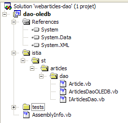
El proyecto está configurado para generar un DLL denominado [webarticles-dao.dll]:
 |  |
2.4.5.4. Pruebas Nunit de la capa [dao]
2.4.5.4.1. La clase de prueba NUnit
La clase de prueba Nunit de la clase de implementación [ArticlesDaoOleDb] es la misma que la de la clase [ArticlesDaoPlainODBC] (véase el apartado 2.3.3.2). Seguimos un procedimiento similar para preparar la prueba Nunit de la clase:
- creamos en la carpeta de Visual Studio del proyecto [dao-oledb] la carpeta [tests] (a la derecha) copiando la carpeta [tests] del proyecto [dao-odbc] (a la izquierda):
| 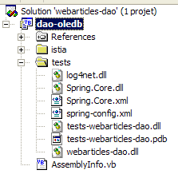 |
- en la carpeta [tests] del proyecto [dao-oledb] sustituimos DLL [webarticles-dao.dll] por DLL [webarticles-dao.dll], resultante de la generación del proyecto [dao-oledb]
- modificamos el archivo de configuración [spring-config.xml] para instanciar la nueva clase [ArticlesDaoOleDb]:
Comentarios:
- línea 7, el objeto [articlesdao] está ahora asociado a una instancia de la clase [ ArticlesDaoOleDb]
- esta clase tiene un constructor con un argumento: la cadena de conexión a la base de datos OleDb ACCESS - línea 9
2.4.5.4.2. Tests
Ya estamos listos para las pruebas. Con la ayuda de la aplicación [Nunit-Gui], cargamos el archivo DLL [test-webarticles-dao.dll] de la carpeta [tests] anterior y ejecutamos la prueba [testGetAllArticles]:

A pesar del nombre [NUnitTestArticlesDaoArrayList] asignado inicialmente a la clase de prueba, lo que se prueba aquí es, efectivamente, la clase [ArticlesDaoOleDb]. La captura de pantalla muestra que hemos recuperado correctamente los artículos que habíamos colocado en la tabla [ARTICLES]. Ahora, ejecutemos todas las pruebas:

El lector que visualice este documento en pantalla podrá ver que todas las pruebas se han superado (color verde).
2.4.5.5. Integración de la nueva capa [dao] en la aplicación [webarticles]
Seguimos el procedimiento explicado en el apartado 2.3.4. Realizamos las siguientes modificaciones en el contenido de la carpeta [runtime]:
- En la carpeta [bin], la DLL de laantigua capa [dao] se sustituye por la DLL de la nueva capa [dao] implementada por la clase [ArticlesDaoOleDb]
- en [runtime], el archivo de configuración [web.config] se sustituye por un archivo que tiene en cuenta la nueva clase de implementación:
Comentarios:
- las líneas 14-18 asocian al singleton [articlesDao] una instancia de la nueva clase [ArticlesDaoOleDb]. Este es el único cambio.
Mantenemos la misma configuración del servidor web [Cassini] que antes. Inicializamos la tabla de artículos con los siguientes valores:
Asegúrese de que la base de datos de artículos no esté siendo utilizada por un programa como Visual Studio o ACCESS. Con un navegador solicitamos el URL [http://localhost/webarticles/main.aspx]:
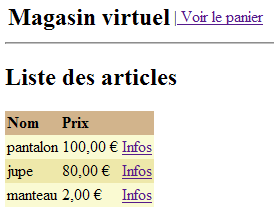
 |
Ahora comprobemos el contenido de la tabla [ARTICLES] con ACCESS:

Los artículos [pantalon] y [jupe] se han comprado y sus existencias se han reducido en la cantidad comprada. El artículo [manteau] no se ha podido comprar porque la cantidad solicitada superaba la cantidad en stock. Invitamos al lector a realizar pruebas adicionales.
2.5. La clase de implementación [ArticlesDaoFirebirdProvider]
2.5.1. El proveedor de acceso Firebird-net-provider
Ya hemos utilizado una fuente de datos [Firebird] a través de un controlador ODBC. Aunque aportan una gran reutilización al código que los emplea, los controladores ODBC son, sin embargo, menos eficaces que los controladores escritos específicamente para el SGBD de destino. El SGBD [Firebird] se puede utilizar a través de una biblioteca de clases específicas que se puede descargar del sitio web de Firebird [http://firebird.sourceforge.net/]. La página de descargas ofrece los siguientes enlaces (abril de 2005):

El enlace [firebird-net-provider] es el que hay que utilizar para descargar las clases .NET de acceso a SGBD Firebird. La instalación del paquete crea una carpeta similar a la siguiente:

Hay dos elementos que nos interesan:
- [FirebirdSql.Data.Firebird.dll]: el ensamblado que contiene las clases .NET de acceso a SGBD Firebird
- [FirebirdNETProviderSDK.chm]: la documentación sobre estas clases
A continuación, para que un proyecto de Visual Studio pueda utilizar estas clases, haremos dos cosas:
- colocaremos el ensamblado [FirebirdSql.Data.Firebird.dll] en la carpeta [bin] del proyecto
- añadiremos este mismo ensamblado a las referencias del proyecto
2.5.2. El código de la clase [ArticlesDaoFirebirdProvider]
La clase [ArticlesDaoFirebirdProvider] es muy similar a la clase [ArticlesDaoSqlServer] estudiada anteriormente. Por lo tanto, solo indicaremos los cambios introducidos con respecto a esa versión:
- las clases necesarias se encuentran en el espacio de nombres [FirebirdSql.Data.Firebird] en lugar del espacio de nombres [System.Data.SqlClient]
- la conexión de tipo [SqlConnection] tiene ahora el tipo [FbConnection]
- los objetos [SqlCommand] tienen ahora el tipo [FbCommand]
- los objetos [SqlParameter] tienen ahora el tipo [FbParameter]
El constructor de la clase admite cuatro parámetros, con los que construye la cadena de conexión a la base de datos:
' constructor
Public Sub New(ByVal serveur As String, ByVal databaseName As String, ByVal uid As String, ByVal password As String)
' servidor: nombre del equipo host de SGBD
' databaseName: ruta de acceso a la base de datos
' uid: identidad del usuario que se conecta
' contraseña: su contraseña
...
End Sub
El código completo de la clase [ArticlesDaoFirebirdProvider] es el siguiente:
Imports System
Imports System.Collections
Imports FirebirdSql.Data.Firebird
Namespace istia.st.articles.dao
Public Class ArticlesDaoFirebirdProvider
Implements istia.st.articles.dao.IArticlesDao
' campos privados
Private connexion As FbConnection = Nothing
Private databasePath As String
Private insertCommand As FbCommand
Private updatecommand As FbCommand
Private deleteSomeCommand As FbCommand
Private selectSomeCommand As FbCommand
Private updateStockCommand As FbCommand
Private deleteAllCommand As FbCommand
Private selectAllCommand As FbCommand
' fabricante
Public Sub New(ByVal serveur As String, ByVal databasePath As String, ByVal uid As String, ByVal password As String)
' servidor: nombre del equipo host de SGBD Firebird
' databaseName: ruta de acceso a la base de datos que se va a utilizar
' uid: identidad del usuario que se conecta a la base
' contraseña: su contraseña
'se recupera el nombre de la base de datos pasado como argumento
Me.databasePath = databasePath
': se establece la conexión
Dim connectString As String = String.Format("DataSource={0};Database={1};User={2};Password={3}", serveur, databasePath, uid, password)
connexion = New FbConnection(connectString)
' se preparan las consultas SQL
insertCommand = New FbCommand("insert into ARTICLES(id, nom, prix, stockactuel, stockminimum) values (@id,@nom,@prix,@sa,@sm)", connexion)
updatecommand = New FbCommand("update ARTICLES set nom=@nom, prix=@prix, stockactuel=@sa, stockminimum=@sm where id=@id", connexion)
deleteSomeCommand = New FbCommand("delete from ARTICLES where id=@id", connexion)
selectSomeCommand = New FbCommand("select id, nom, prix, stockactuel, stockminimum from ARTICLES where id=@id", connexion)
updateStockCommand = New FbCommand("update ARTICLES set stockactuel=stockactuel+@mvt where id=@id and (stockactuel+@mvt)>=0", connexion)
selectAllCommand = New FbCommand("select id, nom, prix, stockactuel, stockminimum from ARTICLES", connexion)
deleteAllCommand = New FbCommand("delete from ARTICLES", connexion)
End Sub
Public Function ajouteArticle(ByVal unArticle As Article) As Integer Implements IArticlesDao.ajouteArticle
' sección exclusiva
SyncLock Me
' se prepara la consulta de inserción
With insertCommand.Parameters
.Clear()
.Add(New FbParameter("@id", unArticle.id))
.Add(New FbParameter("@nom", unArticle.nom))
.Add(New FbParameter("@prix", unArticle.prix))
.Add(New FbParameter("@sa", unArticle.stockactuel))
.Add(New FbParameter("@sm", unArticle.stockminimum))
End With
Try
'se ejecuta
Return executeUpdate(insertCommand)
Catch ex As Exception
'error de consulta
Throw New Exception(String.Format("Erreur à l'ajout de l'article [{0}] : {1}", unArticle.ToString, ex.Message))
End Try
End SyncLock
End Function
Public Function changerStockArticle(ByVal idArticle As Integer, ByVal mouvement As Integer) As Integer Implements IArticlesDao.changerStockArticle
' sección exclusiva
SyncLock Me
' se prepara la consulta de actualización de stock
With updateStockCommand.Parameters
.Clear()
.Add(New FbParameter("@mvt", mouvement))
.Add(New FbParameter("@id", idArticle))
End With
'se ejecuta
Try
Return executeUpdate(updateStockCommand)
Catch ex As Exception
'error de consulta
Throw New Exception(String.Format("Erreur lors du changement de stock [idArticle={0}, mouvement={1}] : [{2}]", idArticle, mouvement, ex.Message))
End Try
End SyncLock
End Function
Public Sub clearAllArticles() Implements IArticlesDao.clearAllArticles
' sección exclusiva
SyncLock Me
Try
'se ejecuta la consulta de inserción
executeUpdate(deleteAllCommand)
Catch ex As Exception
'error de consulta
Throw New Exception(String.Format("Erreur lors de la suppression des articles : {0}", ex.Message))
End Try
End SyncLock
End Sub
Public Function getAllArticles() As System.Collections.IList Implements IArticlesDao.getAllArticles
' sección exclusiva
SyncLock Me
Try
'se ejecuta la consulta SELECT
Dim articles As IList = executeQuery(selectAllCommand)
'se devuelve la lista
Return articles
Catch ex As Exception
'error de consulta
Throw New Exception(String.Format("Erreur lors de l'obtention des articles [select id,nom,prix,stockactuel,stockminimum from articles]: {0}", ex.Message))
End Try
End SyncLock
End Function
Public Function getArticleById(ByVal idArticle As Integer) As Article Implements IArticlesDao.getArticleById
' sección exclusiva
SyncLock Me
' se prepara la consulta select
With selectSomeCommand.Parameters
.Clear()
.Add(New FbParameter("@id", idArticle))
End With
'se ejecuta
Try
'se ejecuta la consulta
Dim articles As IList = executeQuery(selectSomeCommand)
'se comprueba si se ha encontrado el artículo
If articles.Count = 0 Then Return Nothing
'se devuelve el artículo
Return CType(articles.Item(0), Article)
Catch ex As Exception
'error de consulta
Throw New Exception(String.Format("Erreur lors de la recherche de l'article [{0} : {1}", idArticle, ex.Message))
End Try
End SyncLock
End Function
Public Function modifieArticle(ByVal unArticle As Article) As Integer Implements IArticlesDao.modifieArticle
' sección exclusiva
SyncLock Me
' se prepara la consulta de actualización
With updatecommand.Parameters
.Clear()
.Add(New FbParameter("@nom", unArticle.nom))
.Add(New FbParameter("@prix", unArticle.prix))
.Add(New FbParameter("@sa", unArticle.stockactuel))
.Add(New FbParameter("@sm", unArticle.stockminimum))
.Add(New FbParameter("@id", unArticle.id))
End With
' se ejecuta
Try
'se ejecuta la consulta de inserción
Return executeUpdate(updatecommand)
Catch ex As Exception
'error de consulta
Throw New Exception("Erreur lors de la modification de l'article [" + unArticle.ToString + "]", ex)
End Try
End SyncLock
End Function
Public Function supprimeArticle(ByVal idArticle As Integer) As Integer Implements IArticlesDao.supprimeArticle
' sección exclusiva
SyncLock Me
' Se prepara la consulta de eliminación
With deleteSomeCommand.Parameters
.Clear()
.Add(New FbParameter("@id", idArticle))
End With
'se ejecuta
Try
'se ejecuta la consulta de eliminación
Return executeUpdate(deleteSomeCommand)
Catch ex As Exception
'error de consulta
Throw New Exception(String.Format("Erreur lors de la suppression de l'article [id={0}] : {1}", idArticle, ex.Message))
End Try
End SyncLock
End Function
Private Function executeQuery(ByVal query As FbCommand) As IList
' ejecución de una consulta SELECT
' declaración del objeto que permite el acceso a todas las líneas de la tabla de resultados
Dim myReader As FbDataReader = Nothing
Try
'se crea una conexión a la BDD
connexion.Open()
'se ejecuta la consulta
myReader = query.ExecuteReader()
'se declara una lista de artículos para devolverla posteriormente
Dim articles As IList = New ArrayList
Dim unArticle As Article
While myReader.Read()
': se prepara un artículo con los valores del lector
unArticle = New Article
unArticle.id = myReader.GetInt32(0)
unArticle.nom = myReader.GetString(1)
unArticle.prix = myReader.GetDouble(2)
unArticle.stockactuel = myReader.GetInt32(3)
unArticle.stockminimum = myReader.GetInt32(4)
'se añade el artículo a la lista
articles.Add(unArticle)
End While
'se devuelve el resultado
Return articles
Finally
' liberación de recursos
If Not myReader Is Nothing And Not myReader.IsClosed Then myReader.Close()
If Not connexion Is Nothing Then connexion.Close()
End Try
End Function
Private Function executeUpdate(ByVal updateCommand As FbCommand) As Integer
' ejecución de una solicitud de actualización
Try
'se crea una conexión con BDD
connexion.Open()
'se ejecuta la consulta
Return updateCommand.ExecuteNonQuery()
Finally
' liberación de recursos
If Not connexion Is Nothing Then connexion.Close()
End Try
End Function
End Class
End Namespace
Se invita al lector a leer este código a la luz de los comentarios sobre la clase [ArticlesDaoSqlServer] realizados anteriormente.
2.5.3. Generación del ensamblado de la capa [dao]
El nuevo proyecto de Visual Studio tiene la siguiente estructura:

Cabe destacar la presencia del ensamblado [FirebirdSql.Data.Firebird.dll] en las referencias del proyecto. Este DLL se ha colocado en la carpeta [bin] del proyecto. El proyecto está configurado para generar un DLL denominado [webarticles-dao.dll]:
 |  |
2.5.4. Pruebas Nunit de la capa [dao]
2.5.4.1. La clase de prueba NUnit
La clase de prueba Nunit de la clase de implementación [ArticlesDaoFirebirdProvider] es la misma que la de la clase [ArticlesDaoPlainODBC] (véase el apartado 2.3.3.2). Seguimos un procedimiento similar para preparar la prueba Nunit de la clase [ArticlesDaoFirebirdProvider]:
- creamos en la carpeta de Visual Studio del proyecto [dao-firebird-provider] la carpeta [tests] (a la derecha) copiando la carpeta [bin] del proyecto de pruebas de la capa [dao-odbc] (a la izquierda):
|  |
- en la carpeta [tests] sustituimos DLL [webarticles-dao.dll] por DLL [webarticles-dao.dll] procedente de la generación del proyecto [dao-firebird-provider]
- modificamos el archivo de configuración [spring-config.xml] para instanciar la nueva clase [ArticlesDaoFirebirdProvider]:
Comentarios:
- línea 7, el objeto [articlesdao] está ahora asociado a una instancia de la clase [ArticlesDaoFirebirdProvider]
- esta clase tiene un constructor con cuatro argumentos
- la máquina host de SGBD - línea 9
- la ruta de acceso a la base de datos Firebird - línea 12
- el nombre de usuario que se conecta - línea 15
- su contraseña - línea 18
2.5.4.2. Pruebas
La tabla [ARTICLES] de la fuente de datos se rellena con los siguientes artículos (utilice IBExpert):

Estamos listos para las pruebas. Con la ayuda de la aplicación [Nunit-Gui], cargamos DLL [test-webarticles-dao.dll] de la carpeta [tests] anterior y ejecutamos la prueba [testGetAllArticles]:

A pesar del nombre [NUnitTestArticlesDaoArrayList] asignado inicialmente a la clase de prueba, lo que se prueba aquí es, efectivamente, la clase [ArticlesDaoFirebirdProvider]. La captura de pantalla muestra que hemos recuperado correctamente los artículos que habíamos colocado en la tabla [ARTICLES]. Ahora, ejecutemos todas las pruebas:

El lector que visualice este documento en pantalla podrá ver que todas las pruebas se han superado (color verde). Lo que no puede ver es que las pruebas se han realizado mucho más rápido que con la base de artículos a la que se accedía a través de un controlador ODBC de nuestra primera implementación.
2.5.5. Integración de la nueva capa [dao] en la aplicación [webarticles]
Seguimos el procedimiento ya explicado en dos ocasiones, en particular en el apartado 2.3.4. Realizamos las siguientes modificaciones en el contenido de la carpeta [runtime]:
- en la carpeta [bin], la DLL de laantigua capa [dao] se sustituye por la DLL de la nueva capa [dao] implementada por la clase [ArticlesDaoFirebirdProvider]. También colocamos allí la DLL necesaria para Firebird [FirebirdSql.Data.Firebird.dll]:

- En [runtime], el archivo de configuración [web.config] se sustituye por un archivo que tiene en cuenta la nueva clase de implementación:
Comentarios:
- las líneas 14-27 asocian al singleton [articlesDao] una instancia de la nueva clase [ArticlesDaoFirebirdProvider]. Este es el único cambio.
Estamos listos para las pruebas. Configuramos el servidor web [Cassini] como en las pruebas anteriores. Inicializamos la tabla de artículos con los siguientes valores:

Con un navegador solicitamos el URL [http://localhost/webarticles/main.aspx]:

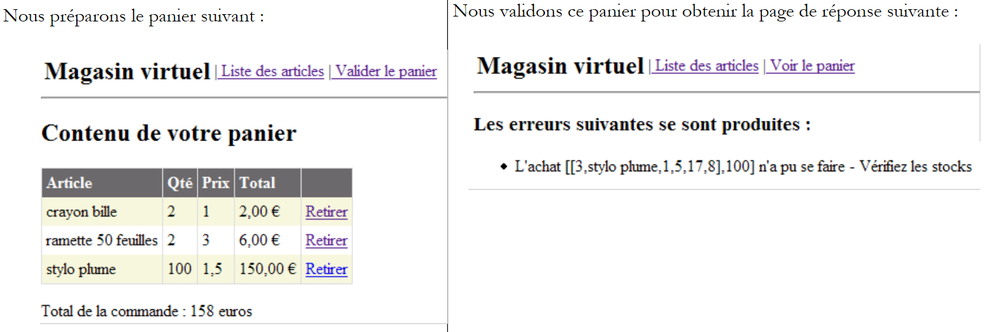 |
Ahora comprobemos el contenido de la tabla [ARTICLES]:

Los artículos [crayon bille] y [ramette 50 feuilles] se han comprado y sus existencias se han reducido en la cantidad comprada. El artículo [stylo plume] no se ha podido comprar porque la cantidad solicitada superaba la cantidad en stock. Invitamos al lector a realizar pruebas adicionales.
2.5.6. La clase de implementación [ArticlesDaoSqlMap]
2.5.6.1. El producto Ibatis SqlMap
Hemos escrito cuatro implementaciones diferentes de la capa [dao] de nuestra aplicación [webarticles]. En cada caso, hemos podido integrar la nueva capa [dao] en la aplicación [webarticles] sin necesidad de recompilar las otras dos capas [web] y [domain]. Esto se ha conseguido, recordemos, gracias a dos decisiones de arquitectura:
- el acceso a las capas a través de interfaces
- la integración de las capas mediante Spring
Queremos ir un poco más allá. Aunque diferentes, nuestras cuatro implementaciones de la capa [dao] presentan similitudes sorprendentes. Una vez escrita la primera implementación, las otras tres se obtuvieron prácticamente mediante copiar y pegar y la sustitución de ciertas palabras clave por otras. La lógica, por su parte, no se modificó. Cabe preguntarse si no sería posible tener una implementación que nos liberara de los diferentes modos de acceso a los datos. Hemos utilizado cuatro:
- acceso a través de un controlador ODBC a una fuente de datos ODBC
- acceso directo a una base de datos SQL Server
- acceso a través de un controlador Ole Db a una fuente de datos Ole Db
- acceso directo a una base de datos Firebird
La herramienta Ibatis SqlMap [[http://www.ibatis.com/] permite desarrollar capas de acceso a datos que son independientes de la naturaleza real de la fuente de datos. El acceso a los datos se garantiza mediante:
- archivos de configuración en los que se almacena la información que define la fuente de datos y las operaciones que se desean realizar sobre ella
- una biblioteca de clases que se basa en esta información para acceder a los datos
La herramienta Ibatis SqlMap se desarrolló inicialmente para la plataforma Java. Su adaptación a la plataforma .NET es reciente y, al parecer, presenta algunos errores (opinión personal que requeriría una verificación exhaustiva). No obstante, dado que la herramienta ha demostrado su eficacia en la plataforma Java, parece interesante presentar la versión .NET.
2.5.6.2. ¿Dónde encontrar IBATIS SqlMap?
El sitio web principal de Firebird es [http://www.ibatis.com/]. La página de descargas ofrece los siguientes enlaces:

Elegiremos el enlace [Stable Binaries], que nos lleva a [SourceForge.net]. Sigue el proceso de descarga hasta el final. Obtendremos un archivo zip que contiene los siguientes archivos:

En un proyecto de Visual Studio que utilice Ibatis SqlMap, hay que hacer dos cosas:
- colocar los archivos anteriores en la carpeta [bin] del proyecto
- añadir al proyecto una referencia a cada uno de estos archivos
2.5.6.3. Los archivos de configuración de Ibatis SqlMap
Se definirá una fuente de datos [SqlMap] mediante los siguientes archivos de configuración:
- providers.config: define las bibliotecas de clases que se utilizarán para acceder a los datos
- sqlmap.config: define las características de la conexión que se va a establecer
- archivos de mapeo: definen las operaciones que se deben realizar sobre los datos
La lógica de estos archivos es la siguiente:
- para acceder a los datos, necesitaremos una conexión. Para representarla, ya hemos visto varias clases: OdbcConnection, SqlConnection, OleDbConnection, FbConnection. También necesitaremos un objeto [Command] para enviar las solicitudes SQL: OdbcCommand, SqlCommand, OleDbCommand, FbCommand. Etc. En el archivo [providers.config], definimos el conjunto de clases que necesitamos.
- El archivo [sqlmap.config] define esencialmente la cadena de conexión a la base de datos que contiene los datos. La conexión a la base de datos se abrirá mediante la instanciación de la clase [Connection] definida en [providers.config], a cuyo constructor se pasará la cadena de conexión definida en [sqlmap.config].
- Los archivos de mapeo definen:
- las asociaciones entre las filas de las tablas de datos y la clase .NET, cuyas instancias contendrán dichas filas
- las operaciones SQL que se deben ejecutar. Estas se identifican mediante un nombre. El código .NET ejecuta estas operaciones mediante su nombre, lo que tiene como consecuencia la eliminación de todo el código SQL del código .NET.
2.5.6.4. Los archivos de configuración del proyecto [dao-sqlmap]
Veamos, con un ejemplo, la naturaleza exacta de los archivos de configuración de SqlMap. Nos pondremos en el caso en el que la fuente de datos sea la fuente ODBC Firebird del apartado 2.3.3.1.
2.5.6.4.1. providers.config
El archivo [providers.config] para una fuente ODBC es este:
Comentarios:
- un archivo [providers.config] se distribuye con el paquete de [SqlMap]. Ofrece varios proveedores de acceso (provider) estándar. El código anterior procede directamente de este archivo.
- un <provider> tiene un nombre (línea 6) que puede ser cualquiera
- Un <provider> puede estar activado ([enabled=true]) o no ([enabled=false]). Si está activado, debe ser accesible el DLL al que se hace referencia en la línea 8. Un archivo [providers.config] puede tener varias etiquetas <provider>.
- línea 8: nombre del ensamblado que contiene las clases definidas líneas 9-15
- línea 9: clase que se utilizará para crear una conexión
- línea 10: clase que se utilizará para crear un objeto [Command] de emisión de comandos SQL
- línea 11: clase que se debe utilizar para gestionar los parámetros de un comando SQL configurado
- línea 12: clase de enumeración de los tipos de datos posibles para los campos de una tabla
- línea 13: nombre de la propiedad de un objeto [Parameter] que contiene el tipo del valor de este parámetro
- línea 14: nombre de la clase [Adapter] que permite crear objetos [DataSet] a partir de la fuente de datos
- línea 15: nombre de la clase [CommandBuilder] que, asociada a un objeto [Adapter], permite generar automáticamente las propiedades [InsertCommand, DeleteCommand, UpdateCommand] de este a partir de su propiedad [SelectCommand]
- líneas 16 - 19: se define cómo se gestionan los comandos SQL configurados. Según el caso, hay que escribir, por ejemplo:
o bien
En el primer caso, se trata de parámetros posicionales formales. Los valores efectivos de estos deben proporcionarse en el orden de los parámetros formales. En el segundo caso, se trata de parámetros con nombre. Se proporciona un valor a dicho parámetro especificando su nombre. El orden ya no tiene importancia.
- línea 16: se indica que las fuentes ODBC utilizan parámetros posicionales
- líneas 17-19: se refieren a los parámetros con nombre. Aquí no hay ninguno.
Esta información permite a SqlMap saber, por ejemplo, qué clase debe instanciar para crear una conexión. En este caso será la clase [OdbcConnection] (línea 9).
2.5.6.4.2. sqlmap.config
El archivo [providers.config] define las clases que se deben utilizar para acceder a una fuente ODBC. No indica ninguna fuente ODBC. Es el archivo [sqlmap.config] el que lo hace:
Comentarios:
- línea 3: se define un archivo de propiedades [properties.xml]. Este define pares (clave, valor). Las claves pueden ser cualesquiera. El valor asociado a una clave C se obtiene mediante la notación ${C} en [sqlmap.config]. Este es el archivo [properties.xml] que se asociará al archivo [sqlmap.config] anterior:
línea 3: se define la clave [provider]. Su valor es el nombre de la etiqueta <provider> que se utilizará en [providers.config]
línea 4: se define la clave [connectionString]. Su valor es la cadena de conexión que se utilizará para establecer una conexión con la fuente de datos ODBC Firebird.
- líneas 4-7: parámetros de configuración:
- línea 5: las consultas SQL se identificarán mediante un nombre que, a su vez, puede formar parte de un espacio de nombres. [useStatementNamespaces="false"] indica que no se utilizarán espacios de nombres.
- línea 6: SqlMap dispone de diferentes estrategias de caché para minimizar los accesos a la fuente de datos. [cacheModelsEnabled="false"] indica que no se utilizará ninguna.
- líneas 9-13: se definen las características de la fuente de datos:
- línea 10: nombre del <provider> de [providers.config] que se va a utilizar
- línea 11: cadena de conexión a la fuente de datos
- línea 12: gestor de transacciones. Aquí no lo hemos utilizado, pero hemos dejado la línea tal cual porque estaba en el archivo de distribución estándar.
- líneas 14-16: lista de archivos que definen las operaciones SQL que se deben realizar en la fuente de datos.
- línea 15: define el archivo de mapeo [articles.xml]
2.5.6.4.3. articles.xml
Este archivo tiene dos funciones:
- definir una asignación de objetos de las tablas de la fuente de datos. En los casos más sencillos, esto equivale a asociar una clase a una fila de una tabla.
- definir operaciones SQL parametrizadas y nombrarlas.
Utilizaremos el siguiente archivo [articles.xml]:
Comentarios:
- líneas 4-11: se define una asignación entre una línea de la tabla [ARTICLES] de la fuente de datos y la clase [istia.st.articles.dao.Article]. A cada columna (column) de la tabla se le asocia una propiedad (property) de la clase [Article]. Esta asignación permite a [SqlMap] construir el resultado de una operación SQL SELECT. Cada línea resultante de SELECT se colocará en un objeto [Article] según las reglas de la asignación.
- línea 5: la asignación se indica con una etiqueta <resultMap> y se nombra con el atributo [id="article"]. La clase asociada se designa mediante el atributo [class="istia.st.articles.dao.Article"].
- líneas 14-44: se definen las operaciones SQL que se necesitan
- líneas 16-18: se define una operación SELECT denominada [getAllArticles]
- línea 16: la operación SELECT se denomina [name= "getAllArticles "] y la asignación que se va a utilizar se define mediante el atributo [resultMap="article"]. Por lo tanto, aquí se hace referencia a la asignación de las líneas 5-11
- línea 17: texto del comando SQL que se va a ejecutar
- líneas 20-22: se define el comando SQL-Delete [clearAllArticles] destinado a vaciar la tabla de artículos.
- líneas 24-27: se define el comando SQL-Insert [insertArticle] destinado a añadir un nuevo artículo a la tabla de artículos. Se trata de una consulta parametrizada por los elementos (#id#, #nombre#, #precio#, #stockactual#, #stockmínimo#). Los valores de estos cinco elementos procederán de un objeto [Article] pasado como parámetro: [parameterClass="istia.st.articles.dao.Article"]. El objeto parámetro debe tener las propiedades (id, nombre, precio, stockactual, stockmínimo) a las que hace referencia el comando SQL parametrizado.
- Líneas 29-31: se define el comando SQL Delete [deleteArticle] destinado a eliminar un artículo cuyo número #value# se conoce. Este número se pasará como parámetro: [parameterClass="int"]. Esta es una regla general. Cuando el parámetro es único, se hace referencia a él mediante la palabra clave #value# en el texto del comando SQL.
- Líneas 33-35: se define el comando SQL-Update [modifyArticle] destinado a modificar un artículo cuyo número se conoce. Al igual que en el comando [insertArticle], los cinco datos necesarios procederán de las propiedades de un objeto [istia.st.articles.dao.Article].
- líneas 37-39: se define el comando SQL-Select [getArticleById], que permite obtener la línea de un artículo cuyo número se conoce.
- líneas 41-43: se define el comando SQL-Update [changerStockArticle] que modifica el campo [stockactuel] de un artículo cuyo número se conoce. Los dos datos necesarios, el n.º #id# del artículo y el incremento #mouvement# del stock, se encuentran en un diccionario: [parameterClass="Hashtable"]. Este deberá tener dos claves: id y mouvement. Los valores asociados a estas dos claves serán los que se utilicen en el comando SQL.
2.5.6.4.4. Ubicación de los archivos de configuración
Veremos dos situaciones diferentes:
- en el caso de una prueba Nunit, los archivos de configuración de [SqlMap] se colocarán en la misma carpeta que los binarios probados.
- en el caso de una aplicación web, se colocarán en la raíz de la aplicación.
2.5.6.5. El API de SqlMap
Las clases de SqlMap se encuentran en DLL, que normalmente se coloca en la carpeta [bin] de la aplicación:
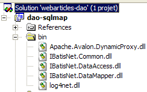
Las aplicaciones que utilizan las clases de SqlMap deben importar el espacio de nombres [IBatisNet.DataMapper]:
Todas las operaciones SQL se realizan a través de un singleton de tipo [Mapper], una clase del espacio de nombres [IBatisNet.DataMapper ]. El singleton se obtiene de la siguiente manera:
Para ejecutar el comando SqlMap [getAllArticles], se escribirá:
- el método [QueryForList] permite obtener el resultado de un comando SELECT en una lista
- el primer parámetro es el nombre del comando SQL que se va a ejecutar (véase articles.xml)
- el segundo parámetro es el parámetro que se debe transmitir a la consulta SQL. Debe corresponder al atributo [parameterClass] del comando SqlMap. En [articles.xml], tenemos [parameterClass=Nothing]. Por lo tanto, aquí se pasa un puntero nulo.
- El resultado es de tipo IList. Los objetos de esta lista se indican mediante el atributo [resultMap] del comando SQL-select: [resultMap="article"]. «article» es un nombre de mapeo:
La clase asociada a esta asignación es [istia.st.articles.dao.Article]. Al final, la variable [articles] definida anteriormente es una lista de objetos [ istia.st.articles.dao.Article]. Así pues, hemos obtenido la totalidad de la tabla [ARTICLES] en una sola instrucción. Si la tabla [ARTICLES] está vacía, se obtiene un objeto [IList] con 0 elementos.
Para ejecutar el comando SqlMap [getArticleById], escribiremos:
- el método [QueryForObject] permite obtener el resultado de un comando SELECT que solo devuelve una línea
- el primer parámetro es el nombre del comando SqlMap que se va a ejecutar
- el segundo parámetro es el parámetro que se debe transmitir a la consulta SQL. Debe corresponder al atributo [parameterClass] del comando SqlMap. En [articles.xml], tenemos [parameterClass="int"]. Por lo tanto, aquí se pasa un entero que representa el número del artículo buscado.
- El resultado es de tipo Object. Si SELECT no ha devuelto ninguna línea, se obtiene el puntero nulo (nothing) como resultado.
Para ejecutar el comando SqlMap [insertArticle], escribiremos:
- el método [Insert] permite ejecutar los comandos SQL INSERT
- el primer parámetro es el nombre del comando SqlMap que se va a ejecutar
- el segundo parámetro es el parámetro que se le debe transmitir. Debe corresponder al atributo [parameterClass] del comando SqlMap. En [articles.xml], tenemos [parameterClass="istia.st.articles.dao.Article"]. Por lo tanto, aquí se pasa un objeto de tipo [istia.st.articles.dao.Article].
Para ejecutar el comando SqlMap [deleteArticle], se escribirá:
- el método [Delete] permite ejecutar los comandos SQL DELETE
- el primer parámetro es el nombre del comando SQL que se va a ejecutar
- el segundo parámetro es el parámetro que se le debe transmitir. Debe corresponder al atributo [parameterClass] del comando SqlMap. En [articles.xml], tenemos [parameterClass="int"]. Por lo tanto, aquí se pasa el número del artículo que se va a eliminar.
- El resultado del método [Delete] es el número de líneas eliminadas
De forma análoga, para ejecutar el comando SqlMap [clearAllArticles], se escribirá:
Para ejecutar el comando SqlMap [modifyArticle], se escribirá:
- El método [Update] permite ejecutar los comandos SQL UPDATE
- el primer parámetro es el nombre del comando SqlMap que se va a ejecutar
- el segundo parámetro es el parámetro que se le debe transmitir. Debe corresponder al atributo [parameterClass] del comando SqlMap. En [articles.xml], tenemos [parameterClass="istia.st.articles.dao.Article"]. Por lo tanto, aquí se pasa un objeto de tipo [istia.st.articles.dao.Article].
- El resultado del método [Update] es el número de líneas modificadas.
De forma análoga, para ejecutar el comando SqlMap [changerStockArticle], se escribirá:
Dim paramètres As New Hashtable(2)
paramètres("id") = idArticle
paramètres("mouvement") = mouvement
' actualización
dim nbLignes as Integer= mappeur.Update("changerStockArticle", paramètres)
- el segundo parámetro corresponde al atributo [parameterClass] del comando SqlMap. En [articles.xml], tenemos [parameterClass="Hashtable"]. El comando SQL, configurado como [changerStockArticle], utiliza los parámetros [id, mouvement]. Por lo tanto, aquí se pasa un diccionario que contiene estas dos claves.
2.5.6.6. El código de la clase [ArticlesDaoSqlMap]
Tras las explicaciones anteriores, ahora podemos escribir la siguiente nueva clase de implementación [ArticlesDaoSqlMap]:
Option Explicit On
Option Strict On
Imports System
Imports IBatisNet.DataMapper
Imports System.Collections
Namespace istia.st.articles.dao
Public Class ArticlesDaoSqlMap
Implements IArticlesDao
' campos privados
Dim mappeur As SqlMapper = Mapper.Instance
' lista de todos los artículos
Public Function getAllArticles() As IList Implements IArticlesDao.getAllArticles
SyncLock Me
Try
Return mappeur.QueryForList("getAllArticles", Nothing)
Catch ex As Exception
Throw New Exception("Echec de l'obtention de tous les articles : [" + ex.ToString + "]")
End Try
End SyncLock
End Function
' Añadir un artículo
Public Function ajouteArticle(ByVal unArticle As Article) As Integer Implements IArticlesDao.ajouteArticle
SyncLock Me
Try
' unArticle: artículo para añadir
' inserción
mappeur.Insert("insertArticle", unArticle)
Return 1
Catch ex As Exception
Throw New Exception("Echec de l'ajout de l'article [" + unArticle.ToString + "] : [" + ex.ToString + "]")
End Try
End SyncLock
End Function
' elimina un artículo
Public Function supprimeArticle(ByVal idArticle As Integer) As Integer Implements IArticlesDao.supprimeArticle
SyncLock Me
Try
' id: id del artículo que se va a eliminar
' eliminación
Return mappeur.Delete("deleteArticle", idArticle)
Catch ex As Exception
Throw New Exception("Erreur lors de la suppression de l'article d'id [" + idArticle.ToString + "] : [" + ex.ToString + "]")
End Try
End SyncLock
End Function
' modifica un artículo
Public Function modifieArticle(ByVal unArticle As Article) As Integer Implements IArticlesDao.modifieArticle
SyncLock Me
Try
' actualización
Return mappeur.Update("modifyArticle", unArticle)
Catch ex As Exception
Throw New Exception("Erreur lors de la mise à jour de l'article [" + unArticle.ToString + "] : [" + ex.ToString + "]")
End Try
End SyncLock
End Function
' búsqueda de un artículo
Public Function getArticleById(ByVal idArticle As Integer) As Article Implements IArticlesDao.getArticleById
SyncLock Me
Try
' id: id del artículo buscado
Return CType(mappeur.QueryForObject("getArticleById", idArticle), Article)
Catch ex As Exception
Throw New Exception("Erreur lors de la recherche de l'article d'id [" + idArticle.ToString + "] : [" + ex.ToString + "]")
End Try
End SyncLock
End Function
' eliminación de todos los artículos
Public Sub clearAllArticles() Implements IArticlesDao.clearAllArticles
SyncLock Me
Try
mappeur.Delete("clearAllArticles", Nothing)
Catch ex As Exception
Throw New Exception("Erreur lors de l'effacement de la table des articles : [" + ex.ToString + "]")
End Try
End SyncLock
End Sub
' cambio del stock de un artículo
Public Function changerStockArticle(ByVal idArticle As Integer, ByVal mouvement As Integer) As Integer Implements IArticlesDao.changerStockArticle
SyncLock Me
Try
' id: id del artículo cuyo stock se modifica
' movimiento: movimiento de stock
Dim paramètres As New Hashtable(2)
paramètres("id") = idArticle
paramètres("mouvement") = mouvement
' actualización
Return mappeur.Update("changerStockArticle", paramètres)
Catch ex As Exception
Throw New Exception(String.Format("Erreur lors du changement de stock [{0},{1}] : {2}", idArticle, mouvement, ex.ToString))
End Try
End SyncLock
End Function
End Class
End Namespace
Se invita al lector a leer este código a la luz de las explicaciones dadas para el API de SqlMap. Cabe destacar que el uso de [SqlMap] ha reducido considerablemente la cantidad de código que hay que escribir.
2.5.6.7. Generación del ensamblado de la capa [dao]
El nuevo proyecto de Visual Studio tiene la siguiente estructura:
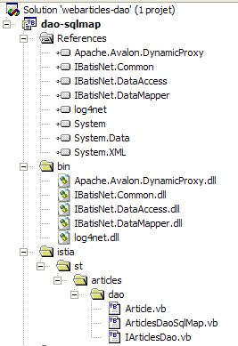
Cabe destacar la presencia de los «ensamblados» necesarios para SqlMap en las referencias del proyecto. Estos DLL se han colocado en la carpeta [bin] del proyecto. El proyecto está configurado para generar un DLL denominado [webarticles-dao.dll]:
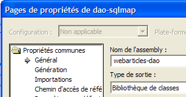 |  |
2.5.6.8. Pruebas Nunit de la capa [dao]
2.5.6.8.1. La clase de prueba NUnit
La clase de prueba Nunit de la clase de implementación [ArticlesDaoSqlMap] es la misma que la de la clase [ArticlesDaoPlainODBC] (véase el apartado 2.3.3.2). Seguimos un procedimiento similar para preparar la prueba Nunit de la clase [ArticlesDaoSqlMap]:
- creamos en la carpeta de Visual Studio del proyecto [dao-sqlmap] la carpeta [test1] (a la derecha) copiando la carpeta [tests] del proyecto [dao-odbc] (a la izquierda):
|  |
- en la carpeta [tests] sustituimos DLL [webarticles-dao.dll] por DLL [webarticles-dao.dll], resultantes de la generación del proyecto [dao-sqlmap].
- Añadimos los DLL necesarios para SqlMap, así como los archivos de configuración analizados [providers.config, sqlmap.config, properties.xml, articles.xml].
- Modificamos el archivo de configuración [spring-config.xml] para instanciar la nueva clase [ArticlesDaoSqlMap]:
Comentarios:
- línea 7, el objeto [articlesdao] está ahora asociado a una instancia de la clase [ArticlesDaoSqlMap]
- esta clase no tiene constructor. Se utilizará el constructor por defecto.
2.5.6.8.2. Tests
La tabla [ARTICLES] de la fuente de datos Firebird se rellena con los siguientes elementos:

Estamos listos para las pruebas. Con la ayuda de la aplicación [Nunit-Gui], cargamos DLL [test-webarticles-dao.dll] de la carpeta [test1] anterior y ejecutamos la prueba [testGetAllArticles]:

A pesar del nombre [NUnitTestArticlesDaoArrayList] asignado inicialmente a la clase de prueba, lo que se prueba aquí es, efectivamente, la clase [ArticlesDaoSqlMap]. La captura de pantalla muestra que hemos recuperado correctamente los artículos que habíamos colocado en la tabla [ARTICLES]. Ahora, ejecutemos todas las pruebas:
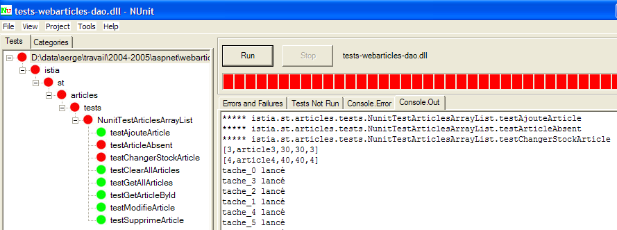
El lector que visualice este documento en pantalla podrá ver que algunas pruebas han tenido éxito (color verde), pero que otras han fallado (color rojo). Las pruebas que han fallado son las pruebas [testArticleAbsent] y [testChangerStockArticle]. Tras una larga investigación, parece que las causas de estos fallos son las siguientes:
- en [testArticleAbsent], se solicita modificar un artículo que no existe. Para ello se utiliza el método [modifieArticle], que devuelve el número de líneas modificadas, es decir, 0 o 1. En este caso, debería ser 0. En cambio, se produce una excepción de tipo [IBatisNet.Common.Exceptions.ConcurrentException].
- En [changerStockArticle] tenemos de nuevo una operación de tipo [update]. Se trata de reducir un stock en una cantidad mayor que el propio stock. Para ello se utiliza el método [changerStockArticle], que devuelve el número de líneas modificadas, es decir, 0 o 1. El comando SQL se ha escrito para evitar una actualización (véase el comando SQL «changerStockArticle» en articles.xml) que haría que el stock fuera negativo. Aquí se espera obtener 0 como resultado del método [changerStockArticle]. De nuevo, se produce una excepción de tipo [IBatisNet.Common.Exceptions.ConcurrentException].
Las posibles fuentes de error son numerosas:
- el código de la clase [ArticlesDaoSqlMap] es erróneo. Es posible. Sin embargo, procede de una adaptación de una clase Java que había funcionado correctamente con la versión Java de SqlMap.
- la versión .NET de SqlMap tiene un error
- El controlador ODBC de Firebird tiene errores
- ...
A falta de certezas, vamos a sortear el obstáculo interceptando la famosa excepción [IBatisNet.Common.Exceptions.ConcurrentException]. El nuevo código de la clase [ArticlesDaoSqlMap] queda así:
Los cambios se encuentran en las líneas: 28, 41, 69. Para las operaciones SQL de tipo [UPDATE, DELETE], si se produce una excepción de tipo [IBatisNet.Common.Exceptions.ConcurrentException], se devuelve 0 como resultado, indicando así que no se ha modificado ni eliminado ninguna línea. Una vez hecho esto, se regenera el DLL del proyecto, se coloca en la carpeta [test1] y se relanzan las pruebas NUnit:
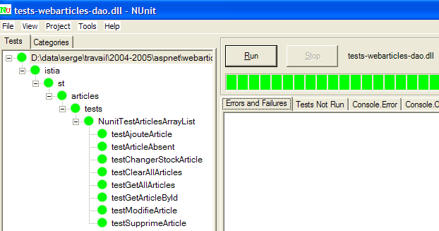
Esta vez sí. A partir de ahora trabajaremos con este DLL.
2.5.6.9. Integración de la nueva capa [dao] en la aplicación [webarticles]
2.5.6.9.1. fuente de datos ODBC
Aquí probamos la fuente de datos ODBC estudiada en el apartado 2.3.3.1. Aquí se utiliza a través de SqlMap.
Seguimos el procedimiento del apartado 2.3.4. Realizamos las siguientes modificaciones en el contenido de la carpeta [runtime]:
- en la carpeta [bin], la DLL de laantigua capa [dao] se sustituye por la DLL de la nueva capa [dao] implementada por la clase [ArticlesDaoSqlMap]. Añadimos las DLL necesarias para Firebird y SqlMap:

- en [runtime], colocamos los archivos de configuración de SqlMap y [providers.config, sqlmap.config, properties.xml, articles.xml]:

- en [runtime], el archivo de configuración [web.config] se sustituye por un archivo que tiene en cuenta la nueva clase de implementación:
Comentarios:
- las líneas 14 asocian al singleton [articlesDao] una instancia de la nueva clase [ArticlesDaoSqlMap]. Este es el único cambio.
Estamos listos para las pruebas. Configuramos el servidor web [Cassini] como en las pruebas anteriores. Inicializamos la tabla de artículos con los siguientes valores:

Con un navegador solicitamos el URL [http://localhost/webarticles/main.aspx]:

 |
Ahora comprobemos el contenido de la tabla [ARTICLES]:

Los artículos [couteau] y [cuiller] se han comprado y sus existencias se han reducido en la cantidad comprada. El artículo [fourchette] no se ha podido comprar porque la cantidad solicitada superaba la cantidad en stock. Invitamos al lector a realizar pruebas adicionales.
2.5.6.9.2. fuente de datos MSDE
Aquí probamos la fuente de datos MSDE estudiada en el apartado 2.4.3.1. Aquí se utiliza a través de SqlMap. Seguimos el mismo procedimiento que anteriormente. Realizamos las siguientes modificaciones en el contenido del archivo [runtime]:
- el contenido de la carpeta [bin] no cambia
- en [runtime], cambian los archivos de configuración de SqlMap y [providers.config, properties.xml]. Los archivos de configuración de [sqlmap.config, articles.xml] no cambian.
- El archivo [providers.config] configura un nuevo <provider>:
<?xml version="1.0" encoding="utf-8" ?>
<providers>
<clear/>
<provider
name="sqlServer1.1"
assemblyName="System.Data, Version=1.0.5000.0, Culture=neutral, PublicKeyToken=b77a5c561934e089"
connectionClass="System.Data.SqlClient.SqlConnection"
commandClass="System.Data.SqlClient.SqlCommand"
parameterClass="System.Data.SqlClient.SqlParameter"
parameterDbTypeClass="System.Data.SqlDbType"
parameterDbTypeProperty="SqlDbType"
dataAdapterClass="System.Data.SqlClient.SqlDataAdapter"
commandBuilderClass="System.Data.SqlClient.SqlCommandBuilder"
usePositionalParameters = "false"
useParameterPrefixInSql = "true"
useParameterPrefixInParameter = "true"
parameterPrefix="@"
/>
</providers>
Este <provider> utiliza las clases .NET de acceso a las fuentes de datos SQL Server. Está integrado de serie en el archivo modelo [providers.config] distribuido con SqlMap.
- El archivo [properties.xml] define el <provider> de la fuente MSDE, así como su cadena de conexión:
<?xml version="1.0" encoding="utf-8" ?>
<settings>
<add key="provider" value="sqlServer1.1" />
<add
key="connectionString"
value="Data Source=portable1_tahe\msde140405;Initial Catalog=dbarticles;UID=admarticles;PASSWORD=mdparticles;"/>
</settings>
- en [runtime], el archivo de configuración [web.config] no cambia.
Estamos listos para las pruebas. El servidor web [Cassini] mantiene su configuración habitual. Inicializamos la tabla de artículos de la fuente MSDE con [EMS MS SQL Manager]:

Con un navegador solicitamos el URL [http://localhost/webarticles/main.aspx]:

 |
Ahora comprobemos el contenido de la tabla [ARTICLES] con [EMS MS SQL Manager]:

Los artículos [ballon foot] y [raquette tennis] se han comprado y sus existencias se han reducido en la cantidad comprada. El artículo [rollers] no se ha podido comprar porque la cantidad solicitada superaba la cantidad en stock. Invitamos al lector a realizar pruebas adicionales.
2.5.6.9.3. fuente de datos OleDb
Aquí probamos la fuente de datos ACCESS presentada en el apartado 2.4.5.1. Aquí se utiliza a través de SqlMap. Seguimos el mismo procedimiento que anteriormente. Realizamos las siguientes modificaciones en el contenido del archivo [runtime]:
- el contenido de la carpeta [bin] no cambia
- en [runtime], cambian los archivos de configuración de SqlMap y [providers.config, properties.xml]. Los archivos de configuración de [sqlmap.config, articles.xml] no cambian.
- El archivo [providers.config] configura un nuevo <provider>:
<?xml version="1.0" encoding="utf-8" ?>
<providers>
<clear/>
<provider
name="OleDb1.1"
enabled="true"
assemblyName="System.Data, Version=1.0.5000.0, Culture=neutral, PublicKeyToken=b77a5c561934e089"
connectionClass="System.Data.OleDb.OleDbConnection"
commandClass="System.Data.OleDb.OleDbCommand"
parameterClass="System.Data.OleDb.OleDbParameter"
parameterDbTypeClass="System.Data.OleDb.OleDbType"
parameterDbTypeProperty="OleDbType"
dataAdapterClass="System.Data.OleDb.OleDbDataAdapter"
commandBuilderClass="System.Data.OleDb.OleDbCommandBuilder"
usePositionalParameters = "true"
useParameterPrefixInSql = "false"
useParameterPrefixInParameter = "false"
parameterPrefix = ""
/>
</providers>
Este <provider> utiliza las clases .NET de acceso a las fuentes de datos OleDb. Está integrado de forma predeterminada en el archivo modelo [providers.config] distribuido con SqlMap.
- El archivo [properties.xml] define el <provider> de la fuente OleDb, así como su cadena de conexión:
<?xml version="1.0" encoding="utf-8" ?>
<settings>
<add key="provider" value="OleDb1.1" />
<add
key="connectionString"
value="Provider=Microsoft.Jet.OLEDB.4.0;Data Source=D:\data\serge\databases\access\articles\articles.mdb;"/>
</settings>
- en [runtime], el archivo de configuración [web.config] no cambia.
Estamos listos para las pruebas. El servidor web [Cassini] mantiene su configuración habitual. Inicializamos la tabla de artículos de la fuente ACCESS de la siguiente manera:

Con un navegador solicitamos el URL [http://localhost/webarticles/main.aspx]:

 |
Ahora comprobemos el contenido de la tabla [ARTICLES] con:
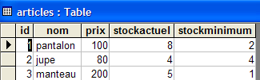
Los artículos [pantalon] y [jupe] se han comprado y sus existencias se han reducido en la cantidad comprada. El artículo [manteau] no se ha podido comprar porque la cantidad solicitada superaba la cantidad en stock. Invitamos al lector a realizar pruebas adicionales.
2.5.7. Conclusión
Con esto concluimos este extenso artículo-tutorial. ¿Qué hemos hecho?
- Hemos implementado la capa [dao] de una aplicación web de tres capas de cuatro maneras diferentes:
- utilizando las clases de acceso .NET a las fuentes ODBC
- utilizando las clases de acceso .NET a las fuentes SQL Server
- utilizando las clases de acceso .NET a las fuentes OleDb
- utilizando clases de acceso de terceros para acceder a una base de datos Firebird
- en cada ocasión, hemos integrado la nueva capa [dao] en la aplicación [webarticles] de tres capas [web, domain, dao] sin recompilar ninguna de las capas [web, domain]
- Por último, hemos presentado la herramienta [SqlMap], que nos ha permitido crear una capa [dao] capaz de adaptarse a diferentes fuentes de datos de forma transparente para el código. Así, con esta nueva capa, hemos podido utilizar sucesivamente las fuentes de datos de las implementaciones 1 a 3 anteriores. Esto se ha hecho de forma transparente mediante archivos de configuración.
- Hemos demostrado la gran flexibilidad que aportaban las herramientas Spring y SqlMap a las aplicaciones web de tres capas.